跨海盆联系通过环球波动型延长西北太平洋海洋热浪
Trans-basin linkages prolong Northwestern Pacific marine heatwaves through a circumglobal wave pattern
跨海盆联系通过环球波动型延长西北太平洋海洋热浪
Trans-basin linkages prolong Northwestern Pacific marine heatwaves through a circumglobal wave pattern
Yu Zhao
Yu Zhao
Jin-Yi Yu
Jin-Yi Yu
通讯作者。
Corresponding author.
电子邮箱：jyyu@uci.edu
Email: jyyu@uci.edu
本文为开放获取文章，依知识共享署名—非商业性使用（Creative Commons Attribution-NonCommercial）许可条款发布；只要所得使用不用于商业利益，并正确引用原作，即允许在任何媒介中使用、传播和复制。
This is an open-access article distributed under the terms of the Creative Commons Attribution-NonCommercial license, which permits use, distribution, and reproduction in any medium, so long as the resultant use is not for commercial advantage and provided the original work is properly cited.
摘要
摘要
Abstract
西北太平洋（NWP）的海洋热浪正变得日益频繁且更为持续，但其能够维持多季节持续时间的机制仍知之甚少。
Marine heatwaves in the Northwestern Pacific (NWP) have become increasingly frequent and persistent, yet the mechanisms enabling their multiseasonal duration remain poorly understood.
通过观测分析与气候模式试验，我们表明西北太平洋海洋热浪主要由一个准定常 5 波环球波动（CGW）型驱动，该波动型独立于厄尔尼诺–南方涛动而运作。
Through observational analyses and climate model experiments, we demonstrate that NWP marine heatwaves are primarily driven by a quasistationary wavenumber 5 circumglobal wave (CGW) pattern that operates independently of El Niño–Southern Oscillation.
CGW 在夏季调制海表热通量，触发一个自我强化的反馈环路：西北太平洋增暖增强 CGW 型，从而在更长的暖季中放大并延长热浪。
The CGW modulates surface heat fluxes during summer, triggering a self-reinforcing feedback loop where NWP warming intensifies the CGW pattern, amplifying and prolonging heatwaves across extended warm seasons.
此外，CGW 驱动的北大西洋北部夏季增暖通过海洋热惯性持续至冬季，激发沿大圆路径传播、并回传至西北太平洋的波动型，从而在冷季维持热浪。
Additionally, CGW-driven summer warming in the northern North Atlantic persists into winter through oceanic thermal inertia, exciting a great-circle wave pattern that propagates back to the NWP, sustaining heatwaves through cold seasons.
大气波动与跨海盆相互作用的这一交织，使得多年际海洋热浪事件成为可能。
This interplay between atmospheric waves and trans-basin interactions enables multiyear marine heatwave events.
对观测资料与气候模式模拟的分析显示，近几十年来 CGW 的影响在增强，表明在持续的全球变暖背景下，西北太平洋海洋热浪将更为频繁、更为持久。
Analysis of observational data and climate model simulations reveals a strengthening CGW influence in recent decades, indicating more frequent and prolonged NWP marine heatwaves under ongoing global warming.
环球大气波动通过跨海盆联系造成持久的太平洋海洋热浪。
Circumglobal atmospheric waves create lasting Pacific marine heatwaves through trans-basin connections.
引言
引言
INTRODUCTION
在西北太平洋（NWP），海洋热浪（MHWs）近几十年来在频率和强度上均呈现显著增加（1–3）。
In the Northwestern Pacific (NWP), marine heatwaves (MHWs) have exhibited a marked increase in both frequency and intensity over recent decades (1–3).
其中许多事件表现出异常的持续性，跨越多个季节，甚至延续数年（1–6）。
Many of these events exhibit exceptional persistence, spanning multiple seasons or even extending across several years (1–6).
此类持久海洋热浪产生深远影响：扰乱海洋生态系统、降低渔业产量，并调制区域气候，从而对生物多样性和依赖海洋资源的沿海经济构成重大威胁（7–11）。
Such prolonged MHWs exert profound impacts, disrupting marine ecosystems, reducing fisheries productivity, and modulating regional climate, thereby posing substantial threats to biodiversity and coastal economies reliant on marine resources (7–11).
因此，阐明驱动持久西北太平洋海洋热浪的物理机制，对于提高预测能力、指导气候适应策略并加强海洋资源管理至关重要（2, 12, 13）。
Elucidating the physical mechanisms driving prolonged NWP MHWs is thus critical for improving predictive capability, informing climate adaptation strategies, and enhancing marine resource management (2, 12, 13).
现有关于海洋热浪形成的框架主要关注局地大气强迫（2, 13–16）、海洋过程（17–20），以及来自主要气候变率模态的远程影响（3, 5, 21–24）。
Existing frameworks for MHW formation focus on local atmospheric forcing (2, 13–16), oceanic processes (17–20), and remote influences from major climate variability modes (3, 5, 21–24).
与这些框架相一致，已有研究将西北太平洋海洋热浪归因于持续的高压系统，它们减少云量、增强太阳辐射吸收，并抑制潜热损失。
Consistent with these, studies attribute NWP MHWs to persistent high-pressure systems that reduce cloud cover, enhance solar radiation absorption, and suppress latent heat loss.
高压条件下增强的大气稳定度抑制了海表风，从而减小潜热通量（25–27）。
Enhanced atmospheric stability under high-pressure conditions suppresses surface winds, which decreases latent heat flux (25–27).
另一些研究强调海洋环流变化的作用，特别是通过西边界流的异常输送（25, 28, 29）。
Other research highlights the role of ocean circulation changes, particularly anomalous transport through western boundary currents (25, 28, 29).
若干研究还将厄尔尼诺–南方涛动（ENSO）识别为关键驱动因子：拉尼娜条件有利于形成促进西北太平洋增暖的反气旋性大气型（24, 30）。
Several studies also identify the El Niño–Southern Oscillation (ENSO) as a key driver, with La Niña conditions fostering anticyclonic atmospheric patterns that promote NWP warming (24, 30).
然而，如前所述，若干西北太平洋海洋热浪（6）尽管中纬度大气具有很强的季节性（31）、且中纬度海气耦合较弱（32）——这两者通常会打断持续的海洋增暖——仍表现出显著的持续性。
Yet, as noted earlier, several NWP MHWs (6) demonstrate remarkable persistence despite the strong seasonality of the extratropical atmosphere (31) and weak ocean-atmosphere coupling in mid-latitudes (32), both of which generally act to disrupt sustained ocean warming.
值得注意的是，诸如 2018–2023 年海洋热浪等事件在厄尔尼诺和拉尼娜位相中均得以持续，表明在局地过程和热带强迫（它们是传统西北太平洋海洋热浪动力学的核心）之外，还有其他机制也在起作用（6, 27, 33）。
Notably, events like the 2018–2023 MHW have persisted across both El Niño and La Niña phases, suggesting that mechanisms beyond local processes and tropical forcing, central to conventional NWP MHW dynamics, also contribute (6, 27, 33).
近期研究表明，驱动东北太平洋海洋热浪（尤其是阿拉斯加湾附近）的异常高压系统嵌于行星尺度波列之中，通过跨海盆相互作用促进海洋热浪发展（23, 34）。
Recent studies show that anomalous high-pressure systems driving Northeastern Pacific MHWs, particularly around the Gulf of Alaska, are embedded within planetary-scale wave trains, facilitating MHW development through trans-basin interactions (23, 34).
这些发现表明，类似的大气波动动力学与跨海盆遥相关可能支撑着西北太平洋海洋热浪的持久持续时间，从而为在传统框架之外理解其持续性提供了一个视角。
These findings suggest that similar atmospheric wave dynamics and trans-basin teleconnections may underpin the prolonged duration of NWP MHWs, offering a perspective to understand their persistence beyond traditional frameworks.
在此基础上，我们提出：环球波动（CGW）型——亦称环球遥相关型（35, 36）——驱动了西北太平洋海洋热浪的延长持续时间。
Building on this, we propose that the circumglobal wave (CGW) pattern, also known as the circumglobal teleconnection pattern (35, 36), drives the extended duration of NWP MHWs.
这一显著的夏季环流特征横跨北半球中纬度带（36）。
This prominent summer circulation feature spans the Northern Hemisphere mid-latitude band (36).
尽管已有研究将 CGW 与陆地极端天气相联系——例如欧洲、亚洲和北美的热浪（37–41）——其在西北太平洋海洋热浪动力学中的作用仍未得到充分探讨。
While prior studies have linked the CGW to terrestrial extreme weather—such as heatwaves in Europe, Asia, and North America (37–41)—its role in NWP MHW dynamics remains underexplored.
鉴于 CGW 活动在北半球夏季达到峰值，并与文献记载的西北太平洋海洋热浪强度和频率最大值相一致（25, 42–46），它为在局地强迫之外启动并维持这些事件提供了一个有说服力的机制。
Given that CGW activity peaks during boreal summer, aligning with the documented maximum in NWP MHW intensity and frequency (25, 42–46), it provides a compelling mechanism for initiating and sustaining these events beyond local forcing alone.
通过观测分析、模式试验以及耦合模式比较计划第六阶段（CMIP6）历史模拟，我们表明 CGW 型不仅在夏季启动西北太平洋海洋热浪，还通过跨海盆相互作用维持它们。
Through observational analyses, model experiments, and Coupled Model Intercomparison Project Phase 6 (CMIP6) historical simulations, we demonstrate that the CGW pattern not only initiates NWP MHWs in summer but also sustains them through trans-basin interactions.
CGW 的半球尺度结构在夏季同时驱动北大西洋的海表温度距平（SSTAs）以及西北太平洋的海洋热浪。
The CGW’s hemispheric structure simultaneously drives sea surface temperature anomalies (SSTAs) in the North Atlantic during summer alongside MHWs in the NWP.
那些大西洋海表温度距平持续至冬季，激发沿大圆路径传播、并回传至西北太平洋的波动型，从而使海洋热浪从暖季（夏季和秋季）延伸到冷季（冬季和春季）。
Those Atlantic SSTAs persist into winter, exciting a great-circle wave pattern that propagates back to the NWP, extending MHWs from warm seasons (summer and fall) through cold seasons (winter and spring).
这两种机制共同使得西北太平洋海洋热浪能够跨季节持续；当它们在连续年份中重复出现时，则驱动多年际事件。
Together, these two mechanisms enable NWP MHW persistence across seasons and, when repeated across consecutive years, drive multiyear events.
此外，我们发现 CGW 对西北太平洋海洋热浪的影响在近期气候变化下有所增强。
Moreover, we find that the CGW’s influence on NWP MHWs has intensified under recent climate change.
关键的是，这些中高纬波动动力学在很大程度上独立于 ENSO 而运作，这凸显了有必要扩展传统海洋热浪框架，将半球尺度大气变率纳入对西北太平洋未来极端事件的理解之中。
Crucially, these extratropical wave dynamics operate largely independently of ENSO, underscoring the need to expand conventional MHW frameworks to include hemispheric-scale atmospheric variability in understanding future extremes in the NWP.
结果
结果
RESULTS
西北太平洋海洋热浪：季节性及其与 CGW 型的联系
西北太平洋海洋热浪：季节性及其与 CGW 型的联系
NWP MHWs: Seasonality and connection to the CGW pattern
西北太平洋海洋热浪的空间型，通过将月平均海表温度距平回归到西北太平洋区域面积平均海表温度距平（NWP 指数；见方法）而揭示。
The spatial pattern of NWP MHWs is revealed by regressing monthly SSTAs onto the area-averaged SSTAs over the NWP region (the NWP index; see Methods).
该回归凸显出以西北太平洋为中心的显著增暖信号，最强距平位于日本以东（图 1A）。
This regression highlights a distinct warming signal centered in the NWP, with the most intense anomalies situated east of Japan (Fig. 1A).
增暖向东南伸入中北太平洋，形成细长型，表明存在大尺度大气和海洋影响。
The warming extends southeastward into the central North Pacific, forming an elongated pattern indicative of large-scale atmospheric and oceanic influences.
对 1870–2023 年 NWP 指数的分析显示出很强的季节位相锁定：在整个时段的所有 30 年片段中，方差均一致地在北半球晚夏［7–8–9 月（JAS）］达到峰值（图 1B）。
Analysis of the NWP index from 1870 to 2023 shows strong seasonal phase locking, with variance peaking consistently in late boreal summer [July-August-September (JAS)] across all 30-year segments throughout the period (Fig. 1B).
这一夏季峰值与先前发现相一致，即西北太平洋海洋热浪在该季节最为频繁、最为强烈（42, 43, 47）。
This summer peak corresponds with prior findings that NWP MHWs are most frequent and intense during this season (42, 43, 47).
夏季海洋对大气强迫更为敏感：此时混合层最浅，热通量被集中到最小热容量中，从而放大海表温度（SST）响应。
Enhanced ocean susceptibility to atmospheric forcing during summer, when the shallowest mixed layer concentrates heat flux into minimal heat capacity, amplifies the sea surface temperature (SST) response.
再结合将大气强迫识别为西北太平洋海洋热浪主要驱动因子的证据（6, 25–27），这一显著季节性表明，夏季特有的大气环流型在其形成中起主导作用。
Coupled with evidence identifying atmospheric forcing as the primary driver of NWP MHWs (6, 25–27), this pronounced seasonality suggests that summer-specific atmospheric circulation patterns play a dominant role in their formation.
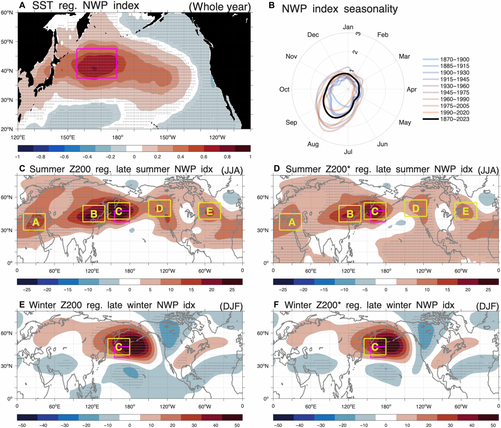
图 1. 西北太平洋海洋热浪：型、季节性以及跨季节的大气环流型。
Fig. 1. NWP MHWs: Pattern, seasonality, and atmospheric circulation patterns across seasons.
（A）海表温度距平（SSTA）对 NWP 指数的回归。
(A) Sea surface temperature anomaly (SSTA) regression onto the NWP index.
（B）连续 30 年片段（1870–2020，以标准差计）以及全时段（1870–2023，黑线）的 NWP 指数季节性。
(B) Seasonality of the NWP index for consecutive 30-year segments (1870–2020, in SDs) and for the full period (1870–2023, black line).
（C）夏季［6–7–8 月（JJA）］Z200 对晚夏［7–8–9 月（JAS）］NWP 指数的回归，揭示出具有五个主导高压中心［（A）至（E），黄框］的 CGW 型，这些中心通过局地极大值识别。
(C) Summer [June-July-August (JJA)] Z200 regression onto the late-summer [July-August-September (JAS)] NWP index, revealing a CGW pattern with five dominant High centers [(A) to (E), yellow boxes] identified through local maxima.
（D）夏季 Z200*（去除 ENSO 信号后的 Z200 距平；见方法）对同一晚夏（JAS）NWP 指数的回归，显示出与（C）相似的型，并具有相同的五个主导高压中心［（A）至（E）］。
(D) Summer Z200* (Z200 anomalies with ENSO signal removed; see Methods) regression onto the same late-summer (JAS) NWP index, showing a similar pattern to (C) with the same five dominant High centers [(A) to (E)].
（E）冬季［12–1–2 月（DJF）］Z200 距平对晚冬［1–2–3 月（JFM）］NWP 指数的回归，显示西北太平洋区域上空有一个强高压中心（以 C 标出，黄框与标签）。
(E) Winter [December-January-February (DJF)] Z200 anomalies regression onto the late winter [January-February-March (JFM)] NWP index, showing a strong high-pressure center over the NWP region (marked as C with yellow box and label).
（F）冬季 Z200* 对晚冬 NWP 指数的回归。
(F) Winter Z200* regression onto the late winter NWP index.
西北太平洋区域以品红框标出［（A）以及（C）至（F）］；在冬季面板（E）和（F）中，仅突出显示 CGW 型的中心 C（黄色标签与框）。
The NWP region is marked by magenta boxes [(A) and (C) to (F)], and only center C of the CGW pattern is highlighted with yellow label and box in winter panels (E) and (F).
灰色圆点表示 95% 置信水平的统计显著性。idx，指数。
Statistical significance at the 95% confidence level is indicated by gray dots. idx, index.
我们通过将夏季［6–7–8 月（JJA）］200 hPa 位势高度（Z200）回归到晚夏（JAS）NWP 指数，并施加 1 个月的 SST 滞后以考虑海洋响应延迟，识别了夏季西北太平洋海洋热浪的主要大气驱动因子。
We identified the primary atmospheric driver of summer NWP MHWs by regressing summer [June-July-August (JJA)] 200-hPa geopotential height (Z200) onto the late-summer (JAS) NWP index, applying a 1-month SST lag to account for oceanic response delays.
该回归揭示出一个显著的 5 波 CGW 型，其特征是一个异常高压中心（中心 C）正好位于西北太平洋海洋热浪区域上空（图 1C）。
This regression reveals a pronounced wavenumber 5 CGW pattern, marked by an anomalous High center (center C) directly over the NWP MHW region (Fig. 1C).
中心 B 与 C 在急流出口区彼此靠近。
Centers B and C are closely spaced in the jet-exit region.
为确认它们代表动力学上可区分的分量、而非单一连续脊，我们进行了局地波动活动（LWA）分析（48）。
To confirm that they represent dynamically distinct components, rather than a single continuous ridge, we performed local wave activity (LWA) analysis (48).
LWA 场在 B 和 C 处显示出由一个相对极小值隔开的清晰局地极大值（图 S1），确认它们作为分开的高振幅波包起作用。
The LWA field shows distinct local maxima at both B and C separated by a relative minimum (fig. S1), confirming that they function as separate high-amplitude wave packets.
在去除 ENSO 影响后的 Z200 距平（记为 Z200*；见方法）上重复该分析，再现了相同的 CGW 特征（图 1D），确认这些大气动力学在很大程度上独立于 ENSO 而运作。
Repeating the analysis on Z200 anomalies with ENSO influences removed (denoted as Z200*; see Methods) reproduces the same CGW signature (Fig. 1D), confirming that these atmospheric dynamics operate largely independently of ENSO.
除结果的最后一部分——我们在那里明确比较 ENSO 与非 ENSO 过程对西北太平洋海洋热浪形成的贡献——外，我们在全文中均采用这一去 ENSO 框架。
We apply this ENSO-removal framework throughout, except in the final part of Results, where we explicitly compare ENSO’s contribution to NWP MHW formation with non-ENSO processes.
对回归得到的 CGW 型的谱分析（图 S2）进一步强调其主导的 5 波结构，与图 1D 中的五个高压中心相一致。
Spectral analysis of the regressed CGW pattern (fig. S2) further underscores its dominant wavenumber 5 structure, consistent with the five high-pressure centers in Fig. 1D.
我们根据 Z200 回归中识别出的五个异常高压中心定义 CGW 指数，以量化 CGW 型的强度（见方法）。
We quantify the CGW pattern’s strength by defining a CGW index from the five anomalous high-pressure centers identified in the Z200 regression (see Methods).
本研究中的所有指数——无论是 Z200、SST 还是 CGW——均基于原始距平。
All indices in this study—whether Z200, SST, or CGW—are based on original anomalies.
将夏季 Z200* 距平回归到 CGW 指数，得到的型与使用 NWP 指数得到的型高度相关［相关系数 (r) = 0.915，P < 0.001，20°N 至 80°N］（参见图 S3 与图 1D）。
Regressing summer Z200* anomalies onto the CGW index yields a pattern highly correlated [correlation coefficient (r) = 0.915, P < 0.001, 20°N to 80°N] with that obtained using the NWP index (cf fig. S3 and Fig. 1D).
这确认 CGW 指数能有效度量夏季驱动西北太平洋海洋热浪的大气因子强度。
This confirms the CGW index as an effective measure of the strength of the summer atmospheric driver of NWP MHWs.
夏季 CGW 指数与晚夏 NWP 指数强烈相关（r = 0.740，P < 0.001），凸显 CGW 在调制西北太平洋海洋热浪中的首要作用。
The summer CGW and late-summer NWP indices correlate strongly (r = 0.740, P < 0.001), underscoring the CGW’s primary role in modulating NWP MHWs.
对流层上层 CGW 型呈现相当正压结构，向下投影至地面，在中心 C 处表现为海平面气压（SLP）正异常、反气旋性风距平和正的海表热通量（SHF）距平（图 S4A 和 S5）。
The upper-tropospheric CGW pattern exhibits equivalent barotropic structure, projecting downward to the surface with sea level pressure (SLP) highs, anticyclonic wind anomalies, and positive surface heat flux (SHF) anomalies at center C (figs. S4A and S5).
这种垂直耦合通过减少云量、反气旋下沉以及抑制蒸发冷却来驱动海洋增暖——这些机制与先前西北太平洋海洋热浪研究相一致（6）。
This vertical coupling drives ocean warming through reduced cloud cover, anticyclonic subsidence, and suppressed evaporative cooling—mechanisms consistent with previous NWP MHW studies (6).
夏季海洋混合层热收支分析（见方法）量化了这一关系：CGW 驱动的 SHF 距平占混合层温度倾向总量的 77.4%（图 S5）。
Summer ocean mixed-layer heat budget analysis (see Methods) quantifies this relationship: CGW-driven SHF anomalies account for 77.4% of the total mixed-layer temperature tendency (fig. S5).
为阐明维持夏季 CGW 型 5 波结构及其准定常性质的机制，我们分析了北半球夏季大气的波导属性（见方法）。
To elucidate the mechanisms sustaining the CGW pattern’s wavenumber 5 structure and quasistationary nature in summer, we analyzed the waveguide properties of the boreal summer atmosphere (see Methods).
分析表明，定常波数（Ks）超过 5 的区域与北半球急流的夏季气候态位置密切对齐，形成一个连接 CGW 全部五个异常高压中心（A 至 E；图 2A）的连续波导。
Our analysis shows that regions where the stationary wavenumber (Ks) exceeds 5 align closely with the summer climatological position of the Northern Hemisphere jet stream, forming a continuous waveguide linking all five anomalous High centers of the CGW (A to E; Fig. 2A).
罗斯贝波相速度接近于零（图 2B），从而在急流减速或加速处锚定扰动。
Rossby wave phase speed approaches zero (Fig. 2B), anchoring disturbances where the jet stream decelerates or accelerates.
此外，位涡梯度的局地减小降低了 Ks，从而形成有利于 5 波扰动准共振放大的条件（39, 49, 50）。
Moreover, localized reductions in the potential vorticity gradient lower Ks, creating conditions conducive to quasiresonant amplification of wavenumber 5 disturbances (39, 49, 50).
这种准共振状态增强了 CGW 的相干性与持续性（51），从而在整个北半球夏季维持半球波动型，并有效驱动西北太平洋海洋热浪。
This quasiresonant state enhances the CGW’s coherence and persistence (51), thereby maintaining the hemispheric wave pattern through the boreal summer and effectively driving NWP MHWs.
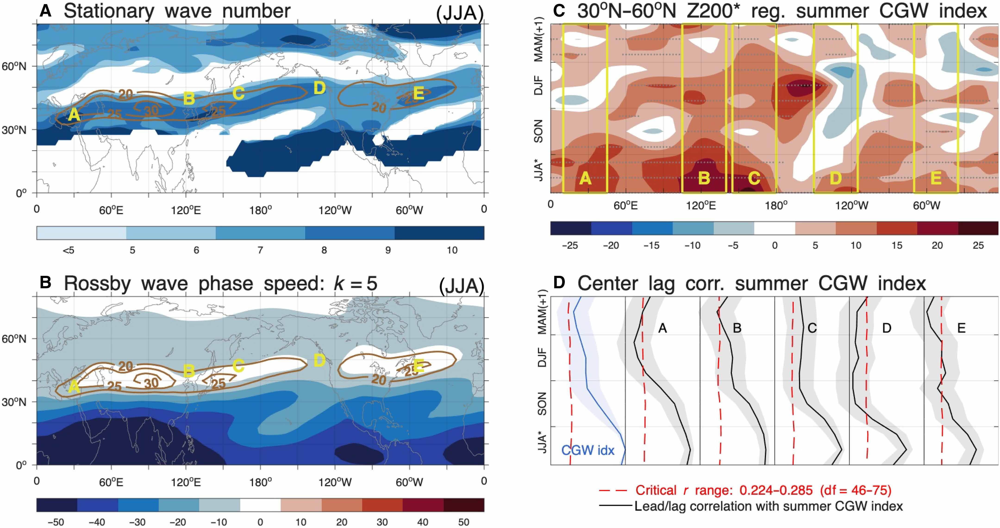
图 2. CGW 型的时间持续性与准定常特征。
Fig. 2. Temporal persistence and quasistationary characteristics of the CGW pattern.
（A）夏季（JJA）定常波数。
(A) Summer (JJA) stationary wavenumber.
（B）纬向波数 k = 5 的夏季罗斯贝波相速度。
(B) Summer Rossby wave phase speed for zonal wavenumber k = 5.
由图 1C 识别的 CGW 中心（A 至 E）在（A）和（B）中以黄色字母标出。
The CGW centers (A to E), identified from Fig. 1C, are indicated by yellow letters in (A) and (B).
棕色等值线表示气候态 200 hPa 纬向风（U200）［（A）和（B）］。
Brown contour lines represent climatological 200-hPa zonal wind (U200) [(A) and (B)].
（C）对夏季 CGW 指数回归的、30°N 至 60°N 平均的超前–滞后 Z200*（去除 ENSO 信号后的 Z200 距平）Hovmöller 图，并标出五个 CGW 中心。
(C) Hovmöller diagram of lead-lag Z200* (Z200 anomalies with ENSO signal removed) averaged over 30°N to 60°N regressed onto the summer CGW index, with the five CGW centers indicated.
灰色圆点表示 95% 置信水平的统计显著性。
Gray dots denote statistical significance at the 95% confidence level.
（D）超前–滞后相关：蓝线为 CGW 指数与夏季 CGW 指数的滞后相关，黑线为各个 CGW 中心（A 至 E）与夏季 CGW 指数的滞后相关。
(D) Lead-lag correlation: The blue line shows the CGW index lag correlation with the summer CGW index, whereas black lines represent lag correlations between individual CGW centers (A to E) with the summer CGW index.
阴影表示 95% 置信区间，红色虚线表示临界相关系数。
Shading denotes the 95% confidence interval, and red dashed lines indicate the critical correlation coefficient.
SON，9–10–11 月；MAM，3–4–5 月。
SON, September-October-November; MAM, March-April-May.
我们通过对 Z200* 距平相对夏季 CGW 指数做滞后回归，评估了五个 CGW 高压中心的时间演变与持续性。
We evaluated the temporal evolution and persistence of the five CGW high-pressure centers by performing lagged regressions of Z200* anomalies onto the summer CGW index.
所得 Hovmöller 图（30°N 至 60°N；图 2C）表明 CGW 型为准定常：五个中心在整个夏季几乎固定在各自经度上，传播很小。
The resulting Hovmöller diagram (30°N to 60°N; Fig. 2C) demonstrates the CGW pattern’s quasistationary behavior, with all five centers remaining nearly fixed at their respective longitudes throughout summer, showing minimal propagation.
CGW 指数以及中心 A 至 E 处 Z200* 距平的滞后自相关（图 2D）确认了它们的时间稳定性，自相关值在整个季节保持一致偏高。
Lagged autocorrelation of the CGW index and Z200* anomalies at centers A to E (Fig. 2D) confirms their temporal stability, with autocorrelation values remaining uniformly high over the season.
这些波导属性与自相关结果共同强调了 CGW 的准定常性质。
Together, these waveguide properties and autocorrelation results underscore the CGW’s quasistationary nature.
此外，这些分析表明，夏季急流的气候态配置使西北太平洋（即 CGW 型的中心 C）成为海洋热浪形成的有利区域。
Furthermore, these analyses suggest that the summer jet stream’s climatological configuration positions the NWP (i.e., center C of the CGW pattern) as a favored region for MHW formation.
延长暖季期间西北太平洋海洋热浪的持续性：局地 NWP-CGW 自我强化反馈
延长暖季期间西北太平洋海洋热浪的持续性：局地 NWP-CGW 自我强化反馈
NWP MHW persistence during the extended warm season: Local NWP-CGW self-reinforcing feedback
为评估夏季西北太平洋海洋热浪能够持续多久，我们计算了月平均 NWP 指数与夏季 CGW 指数之间的滞后相关，以考察其在夏季被 CGW 型触发后，西北太平洋海洋热浪海表温度距平的衰减特征（图 3B）。
To assess how long the summer NWP MHWs could last, we calculated the lagged correlation between the monthly NWP index and the summer CGW index, examining the decay characteristics of the NWP MHW’s SSTAs after their triggering by the CGW pattern in summer (Fig. 3B).
分析确认 NWP-CGW 相关在 1 个月滞后处达到峰值，反映海洋对大气强迫的延迟响应。
The analysis confirms that NWP-CGW correlation peaks at a 1-month lag, reflecting the ocean’s delayed response to atmospheric forcing.
在该峰值之后，相关缓慢下降，但直至 11 月仍保持偏高。
Following this peak, the correlation decreases slowly but remains elevated through November.
为判定这种持续性是否仅源于海洋热惯性，我们采用 AR(1) 模式（见方法）估计仅由海洋记忆驱动的 SST 持续性。
To determine whether this persistence arises solely from oceanic thermal inertia, we applied an AR(1) model (see Methods) to estimate SST persistence driven by ocean memory alone.
将观测到的滞后 NWP-CGW 相关与 AR(1) 预测的持续性相比较表明，观测相关在夏季和秋季始终高于 AR(1) 的预测，这意味着除热惯性所能解释的部分外，局地海气耦合等额外机制进一步维持了西北太平洋增暖。
Comparing the observed lagged NWP-CGW correlation to the AR(1)-predicted persistence reveals that the observed correlation consistently exceeds the AR(1)’s predictions across summer and fall, implying that additional mechanisms, such as local ocean-atmosphere coupling, further sustain NWP warming beyond what thermal inertia can explain.
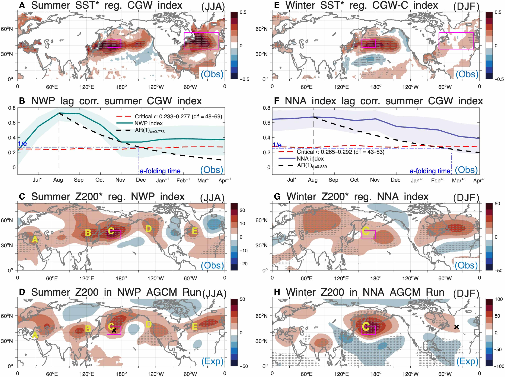
图 3. 跨季节西北太平洋增暖与 CGW 型之间的自我强化反馈。
Fig. 3. Self-reinforcing feedback between NWP warming and the CGW pattern across seasons.
（A）夏季（JJA）SST*（去除 ENSO 信号后的 SST 距平）对夏季 CGW 指数的回归。
(A) Summer (JJA) SST* (SST anomalies with ENSO signal removed) regression onto the summer CGW index.
（B）NWP 指数与夏季（JJA）CGW 指数之间的滞后相关（绿线，阴影表示 95% 置信区间），并与拟合于 NWP 指数的理想化 AR(1) 模式的理论衰减相比较（见方法；黑色虚线；α = 0.773，并标出自峰值相关起的 e 折时间）。
(B) Lag correlation between NWP and summer (JJA) CGW indices (green line, shading represents 95% confidence interval), compared to a theoretical decay of an idealized AR(1) model fitted to NWP index (see Methods; dashed black line; α = 0.773, with e-folding time from peak correlation marked).
（C）夏季 Z200*（去除 ENSO 信号后的 Z200 距平）对 NWP 指数的回归。
(C) Regression of Summer Z200* (Z200 anomalies with ENSO signal removed) onto the NWP index.
（D）强迫 AGCM 试验之 NWP 试验中的夏季 Z200 响应。
(D) Summer Z200 response in the NWP Run of forced AGCM experiment.
（E）冬季（DJF）SST* 对冬季 CGW-C 指数的回归。
(E) Winter (DJF) SST* regression onto the winter CGW-C index.
（F）NNA 指数与夏季 CGW 指数之间的滞后相关（紫线，阴影表示 95% 置信区间），并与拟合于 NNA 指数的理想化 AR(1) 模式的理论衰减相比较（黑色虚线；α = 0.859，标出自峰值相关起的 e 折时间）。
(F) Lag correlation between the NNA and summer CGW indices (purple line, shading represents 95% confidence interval), compared to a theoretical decay of an idealized AR(1) model fitted to NNA index (dashed black line; α = 0.859, e-folding time from peak correlation indicated).
（G）冬季（DJF）Z200* 距平对冬季 NNA 指数的回归。
(G) Winter (DJF) Z200* anomalies regression onto the winter NNA index.
（H）强迫 AGCM 试验之 NNA 试验中的冬季 Z200 响应。
(H) Winter Z200 response in the NNA Run of forced AGCM experiment.
CGW 中心在（C）和（D）中以黄色标签标出，而在（G）至（H）中仅标出 CGW-C 中心。
The CGW centers are marked with yellow labels in (C) and (D), and only CGW-C center is marked in (G) to (H).
（B）和（F）中的红色虚线标出 95% 置信水平显著性的临界相关系数。
The critical correlation coefficient for significance at the 95% confidence level is marked by the red dashed lines in (B) and (F).
品红框表示（A）、（C）至（E）、（G）和（H）中的西北太平洋区域，以及（A）和（E）中的北大西洋北部区域。
Magenta boxes denote the NWP regions in (A), (C) to (E), (G), and (H) and NNA regions in (A) and (E).
灰色圆点表示 95% 置信水平的统计显著性［（A）、（C）至（E），以及（G）至（H）］。
Statistical significance at the 95% confidence level is indicated by gray dots [(A), (C) to (E), and (G) to (H)].
AGCM 试验中强迫中心以 “x” 标出［（D）和（H）］。
The forcing center is marked by an “x” in AGCM runs [(D) and (H)].
Obs，观测；Exp，试验。
Obs, observation; Exp, experiment.
维持这种持续性的一个潜在机制是反馈环路：其中西北太平洋海洋热浪加强最初触发它们的异常高压中心。
One potential mechanism sustaining this persistence is a feedback loop wherein NWP MHWs reinforce the anomalous High center that initially triggers them.
为探究这种双向相互作用，我们将夏季 Z200* 距平回归到夏季 NWP 指数，以评估大气对西北太平洋 SST 增暖的响应（图 3C）。
To explore this bidirectional interaction, we regressed summer Z200* anomalies onto the summer NWP index to evaluate the atmospheric response to NWP SST warming (Fig. 3C).
所得型与驱动西北太平洋海洋热浪的 CGW 密切镜像对应（参见图 1D），全部五个高压中心（A 至 E）在空间上对齐。
The resulting pattern closely mirrors the CGW that drives the NWP MHWs (cf Fig. 1D), with all five High centers (A to E) spatially aligned.
这种相似性表明，在 CGW 启动西北太平洋海洋热浪之后，所产生的 SST 增暖会激发加强 CGW 型的大气响应，从而放大海洋热浪并建立起自我强化的反馈环路。
This resemblance suggests that, following initiation of an NWP MHW by the CGW, the resulting SST warming elicits an atmospheric response that strengthens the CGW pattern, amplifying the MHW and establishing a self-reinforcing feedback loop.
通过这一自我强化的反馈环路，与 CGW 相联系的环流持续至秋季，推迟暖距平的衰减，从而延长海洋热浪持续时间。
Through this self-reinforcing feedback loop, the CGW-associated circulation persists into autumn, delaying the decay of warm anomalies and thereby extending MHW duration.
为确认西北太平洋海洋热浪能够触发 CGW 型，我们使用 NCAR 的大气环流模式（AGCM）开展了强迫试验，在西北太平洋区域上施加理想化高斯型 SST 增暖距平（见方法）。
To confirm that NWP MHWs can trigger the CGW pattern, we conducted a forced experiment using NCAR’s Atmospheric General Circulation Model (AGCM), in which an idealized Gaussian-shaped SST warming anomaly was imposed over the NWP region (see Methods).
模拟的夏季 Z200 响应（图 3D）类似于观测的 CGW 型，显示出五个清晰的高压中心。
The simulated summer Z200 response (Fig. 3D) resembles the observed CGW pattern, displaying five distinct High centers.
相当正压响应延伸至地面，各中心伴有相应的 SLP 高压和反气旋性风距平（图 S4B）。
The equivalent barotropic response extends to the surface, with corresponding SLP highs and anticyclonic wind anomalies at each center (fig. S4B).
中心 C 仍锚定在西北太平洋上空，直接加强区域上层脊。
Center C remains anchored over the NWP, directly reinforcing the regional upper-level ridge.
AGCM 试验成功再现了全部五个 CGW 高压中心，半球尺度型相关为 0.45（P < 0.01，20°N 至 80°N）。
All five CGW high-pressure centers are successfully reproduced in the AGCM experiment, with a hemispheric-scale pattern correlation of 0.45 (P < 0.01, 20°N to 80°N).
两组结果均呈现 5 波主导，位相差很小，为 39°（<π/4；图 S6），确认 AGCM 成功再现了 CGW 结构以及海洋热浪区域上的海气反馈机制。
Both results exhibit wavenumber 5 dominance with small phase difference of 39° (<π/4; fig. S6), confirming that the AGCM successfully reproduces the CGW structure and ocean-atmosphere feedback mechanism over the MHW region.
CGW 型很可能是对海洋热浪诱导增暖的准定常大气响应：经向温度梯度减小通过热成风平衡削弱夏季急流（52），从而放大对流层上层波动活动。
The CGW pattern is likely a quasistationary atmospheric response to MHW-induced warming: Reduced meridional temperature gradients weaken the summer jet stream via thermal wind balance (52), amplifying upper-tropospheric wave activity.
夏季急流的波导属性（图 2，A 和 B）同时决定了 5 波结构以及五个高压中心的纬向位置，近零相速度使其保持准定常。
The summer jet stream’s waveguide properties (Fig. 2, A and B) determine both the wavenumber 5 structure and the zonal positions of the five high-pressure centers, with near-zero phase speeds keeping them quasistationary.
西北太平洋区域的海气耦合同时维持西北太平洋海洋热浪与 CGW 型。
The ocean-atmosphere coupling in the NWP region sustains both the NWP MHWs and the CGW pattern.
如 Hovmöller 图（图 2C）所示，全部五个高压中心（中心 D 除外）的 Z200* 距平在整个夏季和秋季保持显著。
As shown in the Hovmöller diagram (Fig. 2C), Z200* anomalies for all five High centers (except center D) remain significant through summer and fall.
对各中心 Z200* 距平的滞后自相关分析（图 2D）进一步支持这一点，显示除中心 D 外，所有中心的距平均衰减缓慢，自相关从 JJA（夏季）直至至少 SON（秋季）保持相对偏高。
Lagged autocorrelation analysis of Z200* anomalies for individual centers (Fig. 2D) further supports this, revealing that anomalies in all centers (except center D) decay slowly, maintaining relatively high correlations from JJA (summer) into at least SON (fall).
大多数中心上距平的这种长时间保留与 CGW 指数持续偏高相一致，确认 CGW 型在整个延长暖季（夏季和秋季）仍是大气环流的主导驱动因子。
This prolonged retention of anomalies across most centers aligns with the sustained high values of the CGW index, confirming that the CGW pattern remains a dominant driver of atmospheric circulation throughout the extended warm season (summer and fall).
综合来看，我们的分析与试验揭示出清晰的自我强化反馈：夏季由 CGW 诱导的西北太平洋增暖加强 CGW 型本身，后者进一步增强西北太平洋增暖。
Collectively, our analyses and experiments reveal clear self-reinforcing feedback: Summer CGW-induced NWP warming strengthens the CGW pattern itself, which further intensifies NWP warming.
这一正反馈环路在整个延长暖季中同时增强西北太平洋海洋热浪的持续性与幅度。
This positive feedback loop enhances both the persistence and magnitude of NWP MHWs throughout the extended warm season.
延长冷季期间西北太平洋海洋热浪的持续性：来自北大西洋的远程跨海盆反馈
延长冷季期间西北太平洋海洋热浪的持续性：来自北大西洋的远程跨海盆反馈
NWP MHW persistence during the extended cold season: Remote trans-basin feedback from the North Atlantic
图 3B 所示月平均 NWP 指数与夏季 CGW 指数之间的滞后相关也表明，CGW 驱动的西北太平洋增暖在秋季之后持续至冬季和春季，并在这些季节中保持显著强度。
Lagged correlations between the monthly NWP index and the summer CGW index, presented in Fig. 3B, also reveal that CGW-driven NWP warming persists beyond fall into winter and spring, retaining significant intensity across these seasons.
NWP-CGW 相关在超出海洋热惯性预期衰减［AR(1) 模式中 12 月之前的 e 折时间］之后仍保持显著，甚至在冬季和春季略有加强。
The NWP-CGW correlation remains significant beyond the oceanic thermal inertia’s expected decay [e-folding time before December in the AR(1) model] and even slightly strengthens during winter and spring.
这提出一个关键问题：当冷季加强的中纬急流理应扰乱夏季准定常 CGW 时，西北太平洋海洋热浪如何存续至冬季和春季？
This raises a critical question: How do NWP MHWs survive into winter and spring when the strengthened mid-latitude jets of the cold season should disrupt the summer’s quasistationary CGW?
由于暖季的 NWP-CGW 反馈机制不再起作用，必须有另一种机制在冷季维持海洋热浪。
As the warm season’s NWP-CGW feedback mechanism no longer works, an alternative mechanism must sustain the MHWs during the cold season.
为识别冬季西北太平洋海洋热浪的大气驱动因子，我们将 12–1–2 月（DJF）Z200* 距平回归到 NWP 指数（图 1F）。
To identify the atmospheric driver of NWP MHWs in winter, we regressed December-January-February (DJF) Z200* anomalies onto the NWP index (Fig. 1F).
所得型不再类似于夏季观测到的 CGW 结构。
The resulting pattern no longer resembles the CGW structure observed in summer.
相反，它以西北太平洋上空一个显著的异常高压为特征，该高压与夏季 CGW 型的中心 C 密切对齐（以下简称 CGW-C），并伴有两个次级高压：一个自美国东南部伸入北大西洋，另一个位于欧亚大陆上空。
Instead, it features a prominent anomalous High over the NWP, closely aligned with center C of the summer CGW pattern (hereafter CGW-C), along with two subsidiary Highs: one extending from the southeastern US into the North Atlantic and another over Eurasia.
对原始 Z200 距平做回归时出现相同的型（图 1E），凸显其稳健性。
An identical pattern emerges when regressing raw Z200 anomalies (Fig. 1E), underscoring its robustness.
然而，与准定常的夏季 CGW 不同，冬季遥相关受到季节内振荡和流型转换的影响，具有更大的次季节变率。
Unlike the quasistationary summer CGW, however, the winter teleconnection experiences greater subseasonal variability from intraseasonal oscillations and regime transitions.
这一冬季型提出了它由何维持的问题。
This winter pattern raises the question of what maintains it.
正压能量转换分析（见方法）显示，回归到冬季 NWP 指数时中心 C 处为负值（图 S7），表明天气尺度涡旋将动能输送给时间平均流，从而加强并维持冬季波列型。
Barotropic energy conversion analysis (see Methods) reveals negative values at center C when regressed onto the winter NWP index (fig. S7), indicating that synoptic eddies transfer kinetic energy to the time-mean flow, thereby reinforcing and maintaining the winter wave train pattern.
急流出口区的这一机制有助于维持西北太平洋海洋热浪上空的异常高压系统。
This mechanism in the jet-exit region helps sustain the anomalous high-pressure system over NWP MHWs.
我们定义 CGW-C 指数，以量化 CGW-C 区域上空异常高压的强度（见方法）。
We define a CGW-C index to quantify the strength of the anomalous High over the CGW-C region (see Methods).
将冬季 Z200* 距平回归到该指数（图 S8A）再现了图 1F 中观测到的全部三个异常高压。冬季 CGW-C 指数与 NWP 指数之间的稳健相关（r = 0.594，P < 0.001）凸显了 CGW-C 高压在冬季维持西北太平洋海洋热浪中的关键作用。
Regression of winter Z200* anomalies onto this index (fig. S8A) reproduces all three anomalous Highs observed in Fig. 1F. A robust correlation between the winter CGW-C and NWP indices (r = 0.594, P < 0.001) underscores the pivotal role of the CGW-C High in sustaining NWP MHWs during winter.
此外，冬季混合层热收支（图 S9）表明，CGW-C 高压主要通过海洋经向温度平流驱动西北太平洋海洋热浪增暖（占总效应的 51.2%），SHF 作用较小（14.6%），这与夏季以 SHF 为主导的增暖型形成对照。
Additionally, the winter mixed-layer heat budget (fig. S9) shows that the CGW-C High drives NWP MHW warming primarily through meridional ocean temperature advection (accounting for 51.2% of the total effect), with SHF playing a smaller role (14.6%), contrasting with summer’s SHF-dominated warming pattern.
为探究冬季 CGW-C 高压的起源，我们将冬季 SST* 距平回归到 CGW-C 指数（图 3E）。
To investigate the origin of the winter CGW-C High, we regressed winter SST* anomalies onto the CGW-C index (Fig. 3E).
该分析凸显出与 CGW-C 高压相联系的、西北太平洋和北大西洋北部（NNA）的显著增暖，表明这些区域的海表温度距平可能触发其形成。
This analysis highlighted significant warming in both the NWP and northern North Atlantic (NNA) as linked to the CGW-C High, suggesting that SSTAs in these regions may trigger its formation.
在施加理想化西北太平洋增暖的强迫 AGCM 试验中（图 S8B），冬季在 CGW-C 区域上空形成高压，但与观测相比过于局地（参见图 S8A 和 1F）。
In the forced AGCM experiment with an idealized NWP warming (fig. S8B), a high forms over the CGW-C region in winter but remains too confined compared to observations (cf figs. S8A and 1F).
相比之下，在北大西洋北部区域施加高斯型海表温度距平增暖的强迫 AGCM 试验（见方法）成功再现了 CGW-C 高压，以及包含欧亚大陆和北大西洋北部上空额外异常高压的波列型（图 3H）。
In contrast, a forced AGCM experiment with a Gaussian-shaped SSTA warming imposed in the NNA region (see Methods) successfully reproduced both the CGW-C High and a wave train pattern that included additional anomalous Highs over Eurasia and the NNA (Fig. 3H).
尽管 AGCM 响应（图 3H）的振幅强于观测的 NNA-NWP 回归（图 3G），这一差异很可能反映方法学因素。
Although the AGCM response (Fig. 3H) shows stronger amplitude than the observational NNA-NWP regression (Fig. 3G), this difference likely reflects methodological factors.
10 个成员的 AGCM 集合滤除了可能在有限观测记录中掩盖信号的大气内部变率，而理想化 AGCM 强迫（1°C 相干高斯距平）比典型观测的北大西洋北部条件更强、更持续。
The 10-member AGCM ensemble filters internal atmospheric variability that may obscure signals in the limited observational record, while the idealized AGCM forcing (1°C coherent Gaussian anomaly) is stronger and more persistent than typical observed NNA conditions.
由非线性或相互竞争的 SST 强迫造成的观测回归局限，也可能造成观测关系较弱。
Observational regression limitations from nonlinearity or competing SST forcings could also contribute to the weaker observed relationship.
尽管如此，这些结果表明北大西洋北部增暖在物理上能够产生观测到的冬季大气型，从而将冬季北大西洋北部增暖识别为 CGW-C 高压的关键触发因子，后者进而影响冷季西北太平洋海洋热浪的持续性。
Nevertheless, these results demonstrate that NNA warming is physically capable of generating the observed winter atmospheric pattern, identifying wintertime NNA warming as a critical trigger of the CGW-C High, which, in turn, influences the persistence of NWP MHWs during the cold season.
由于北大西洋北部区域位于夏季 CGW 型中心 E 附近，冬季北大西洋北部增暖最初可能由夏季 CGW 诱导，随后持续至冬季。
Because the NNA region lies near Center E of the summer CGW pattern, the winter NNA warming may initially be induced by the summer CGW and then persists into winter.
将 JJA SST* 回归到夏季 CGW 指数（图 3A）揭示出西北太平洋和北大西洋北部均存在与 CGW 相联系的增暖。
Regressing JJA SST* onto the summer CGW index (Fig. 3A) reveals CGW-associated warming in both the NWP and NNA.
夏季海洋混合层热收支分析表明，CGW 同样通过同一 SHF 过程驱动北大西洋北部增暖（图 S10）。
Summer ocean mixed-layer heat budget analysis shows that the CGW similarly drives NNA warming through the same SHF process (fig. S10).
理解北大西洋北部冬季持续性的关键在于其热惯性。
The key to understanding the NNA’s winter persistence lies in its thermal inertia.
北大西洋北部区域的混合层明显更深（约 110 m，而西北太平洋约 65 m），这意味着更强的热持续性。
The NNA region exhibits substantially deeper mixed layer (~110 versus ~65 m for NWP), which translates to stronger thermal persistence.
滞后自相关分析（图 S11）对此加以量化：与西北太平洋（α = 0.773，τ = 3.9 个月）相比，北大西洋北部显示出显著更强的滞后 1 自相关（α = 0.857，e 折时间 τ = 6.5 个月），互不重叠的 95% 置信区间确认了统计显著性。
Lagged autocorrelation analysis (fig. S11) quantifies this: NNA shows significantly stronger lag-1 autocorrelation (α = 0.857, e-folding time τ = 6.5 months) compared to NWP (α = 0.773, τ = 3.9 months), with nonoverlapping 95% confidence intervals confirming statistical significance.
这一慢 67% 的衰减率与基于 MLD 比值的理论预测密切吻合：ln(αNWP)/ln(αNNA)=1.69≈HNNA/HNWP=1.69，与随机能量平衡模式相一致（见方法）。
This 67% slower decay rate closely matches theoretical predictions based on the MLD ratio: ln(αNWP)/ln(αNNA)=1.69≈HNNA/HNWP=1.69, consistent with the stochastic energy balance model (see Methods).
月平均 NNA 指数与夏季 CGW 指数的滞后相关从秋季缓慢衰减直至次年春季（图 3F），与预期的 AR(1) 衰减率密切对齐（α = 0.859，e 折时间至 2 月下旬）。
The lagged correlation of the monthly NNA index with the summer CGW index decays slowly from fall through the following spring (Fig. 3F), closely aligning with the expected AR(1) decay rate (α = 0.859, e-folding time to late February).
滞后 SST* 回归确认北大西洋北部增暖从夏季持续至冬季（图 S12），维持在冷季加强西北太平洋海洋热浪的跨海盆遥相关。
Lagged SST* regressions confirm persistent NNA warming from summer through winter (fig. S12), sustaining the trans-basin teleconnection that reinforces NWP MHWs during the cold season.
尽管由于混合层更深，北大西洋北部的 SST 持续性强于西北太平洋，但它并不驱动夏季 CGW。
Although the NNA exhibits stronger SST persistence than the NWP due to deeper mixed layers, it does not drive the summer CGW.
夏季北大西洋北部强迫试验（图 S13）仅产生局地响应，没有半球 5 波型，也没有西北太平洋上空的高压。
The summer NNA forcing experiment (fig. S13) produces only localized responses without the hemispheric wavenumber 5 pattern or high over NWP.
因此，北大西洋北部充当“季节记忆保持者”：夏季 CGW 使其增暖，而这种持续增暖随后驱动冬季遥相关。
Thus, the NNA acts as a “seasonal memory keeper”: summer CGW warms it, and this persistent warming then drives the winter teleconnection.
北大西洋北部 AGCM 试验（图 3H）确认了这一机制：冬季北大西洋北部增暖产生 CGW-C 高压及相联系的波列。
The NNA AGCM experiment (Fig. 3H) confirms this mechanism: Winter NNA warming generates the CGW-C High and associated wave train.
观测分析进一步支持这一点：将冬季 Z200* 距平回归到 NNA 指数（图 3G）揭示出跨海盆波列，在中心 C 上空有尤为显著的高压距平。该型表明，一条大圆波列型自北大西洋北部伸过欧亚大陆北部，随后向南弯曲进入北太平洋，建立起三个清晰的高压中心：一个位于北大西洋北部上空，另一个位于欧亚大陆北部上空，第三个位于西北太平洋区域上空。
Observational analysis further supports this: Regressing winter Z200* anomalies onto the NNA index (Fig. 3G) reveals a trans-basin wave train with a particularly prominent high-pressure anomaly over center C. The pattern indicates that a great-circle wave train pattern extends from the NNA across northern Eurasia before curving southward into the North Pacific, establishing three distinct High centers: one over the NNA, another over northern Eurasia, and a third over the NWP region.
这三个中心与冬季西北太平洋增暖相联系的主导 Z200* 距平型密切吻合（图 1G），确认北大西洋北部驱动的波列为延长冷季（从冬季至次年春季）的西北太平洋海洋热浪创造了有利的大气条件。
These three centers closely match the dominant Z200* anomaly pattern associated with winter NWP warming (Fig. 1G), confirming that the NNA-driven wave train creates atmospheric conditions conducive to NWP MHWs through the extended cold season (from winter to the following spring).
近几十年来气候变化下 CGW–海洋热浪联系的加强
近几十年来气候变化下 CGW–海洋热浪联系的加强
Strengthening CGW-MHW linkages under climate change over recent decades
我们通过考察 43 个 CMIP6 模式 1850–2014 年的模拟（表 S1）以及二十世纪再分析（20thC-Reav3），评估 CGW 强迫、西北太平洋海洋热浪及其跨海盆相互作用在近几十年是否有所加强。
We evaluated whether the CGW forcing, NWP MHWs, and their trans-basin interactions have strengthened over recent decades by examining 1850–2014 simulations from 43 CMIP6 models (table S1) alongside the Twentieth Century Reanalysis (20thC-Reav3).
CMIP6 多模式平均（MMM）与 20thC-Reanv3 在夏季 Z200* 对其 NWP 指数的回归中均呈现出 5 波 CGW 型（图 S14），与作为观测参照的美国国家环境预报中心（NCEP）/美国国家大气研究中心（NCAR）再分析 1（NCEP-R1）中识别出的型密切吻合（参见图 1D）。
Both the CMIP6 multimodel mean (MMM) and the 20thC-Reanv3 exhibit a wavenumber 5 CGW pattern in summer Z200* regressions onto their NWP indices (fig. S14), closely matching the pattern identified in the National Centers for Environmental Prediction (NCEP)/National Center for Atmospheric Research (NCAR) Reanalysis 1 (used as the observational reference; NCEP-R1) (cf Fig. 1D).
这种一致性确认 CMIP6 模式有效捕捉了观测到的、由 CGW 驱动的西北太平洋海洋热浪动力学。
This consistency confirms that CMIP6 models effectively capture the observed CGW-driven dynamics of NWP MHWs.
对 1850 至 2014 年观测与模拟的夏季 CGW 指数的分析揭示出，所有数据集均存在显著的增加趋势（图 4A）。
The analysis of the observed and modeled summer CGW index from 1850 to 2014 reveals a pronounced increasing trend across all datasets (Fig. 4A).
CMIP6-MMM、20thC-Reav3 和 NCEP-R1 均显示出 CGW 活动的显著增强，尤其是自 20 世纪后期以来。
The CMIP6-MMM, 20thC-Reav3, and NCEP-R1 all demonstrate a significant intensification of CGW activity, particularly from the late 20th century onward.
NWP 指数中也观测到类似但较弱的增加趋势（图 4B）。
A similar but weaker increasing trend is also observed in the NWP index (Fig. 4B).
我们进一步对这些序列去趋势，并计算去趋势后 NWP 指数与 CGW 指数之间的 30 年滑动相关（图 4C），发现随时间有统计显著的关系加强。
We further detrended these series and performed a running 30-year correlation between the detrended NWP and CGW indices (Fig. 4C), finding a statistically significant strengthening relationship over time.
自 1970 年以来，该相关在 CMIP6-MMM 中以每世纪 0.34 的速率增加（P < 0.001），在 NCEP-R1 中以每世纪 0.12 的速率增加（P = 0.090）。
Since 1970, the correlation has increased at a rate of 0.34 per century in CMIP6-MMM (P < 0.001) and 0.12 per century in NCEP-R1 (P = 0.090).
这些增加记录了西北太平洋区域逐渐增强的海气联系。
These increases document a progressively stronger atmosphere-ocean connection in the NWP region.
这种增强的耦合表明，本研究识别的自我强化反馈机制已变得更为高效，可能导致该区域夏季海洋热浪更为持续、更为强烈。
This enhanced coupling suggests that the self-reinforcing feedback mechanism identified in our study has become more efficient, potentially leading to more persistent and intense summer MHWs in this region.
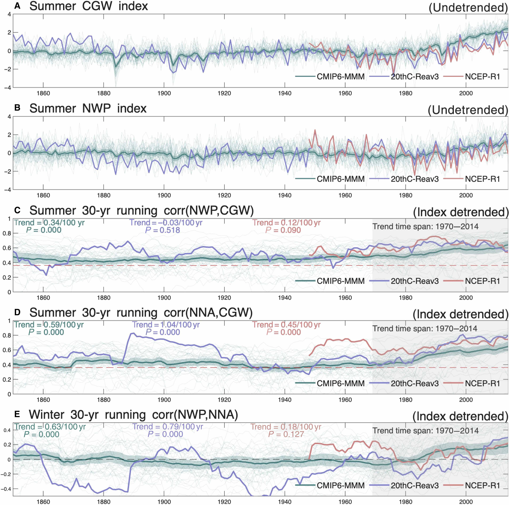
图 4. 观测与 CMIP6 历史模拟中气候变化下增强的 CGW–NWP 关系。
Fig. 4. Enhanced CGW-NWP relationship under climate change in observations and CMIP6 historical simulations.
（A）1850 至 2014 年标准化、未去趋势的夏季（JJA）CGW 指数时间序列，显示 CMIP6 多模式平均（CMIP6-MMM）（粗绿线）、20thC-Reav3（紫色）以及 NCEP/NCAR 再分析 1（NCEP-R1；粉色）。
(A) Time series of normalized undetrended summer (JJA) CGW index from 1850 to 2014 showing CMIP6 multimodel mean (CMIP6-MMM) (thick green line), 20thC-Reav3 (purple), and NCEP/NCAR Reanalysis 1 (NCEP-R1; pink).
（B）同（A），但为夏季 NWP 指数。
(B) Similar to (A) but for the summer NWP index.
（C）去趋势后夏季 CGW 指数与 NWP 指数之间的 30 年窗口滑动相关。
(C) Thirty-year window running correlation between detrended summer CGW and NWP indices.
（D）同（C），但显示夏季 CGW 指数与 NNA 指数。
(D) Similar to (C) but showing summer CGW and NNA indices.
（E）同（C），但显示冬季（DJF）NWP 指数与 NNA 指数。
(E) Similar to (C) but showing winter (DJF) NWP and NNA indices.
红色虚线表示 95% 置信水平的临界相关系数（0.367，df = 28）。
The red dashed lines indicate the critical correlation coefficient (0.367, df = 28) at 95% confidence level.
标注了 1970 至 2014 年的相关系数趋势值及 P 值，灰色区域突出显示趋势时段［（C）和（D）］。
The correlation coefficient trend values from 1970 to 2014 and P values are labeled, and the gray areas highlight the trend time span [(C) and (D)].
浅绿线表示各个模式，绿色阴影表示 CMIP6-MMM 的 95% 置信区间。yr，年。
Light green lines represent individual models, and green shadings represent the 95% confidence interval of CMIP6-MMM. yr, years.
夏季 NNA 与 CGW 的关系表现出甚至更为显著的加强（图 4D）。
The summer NNA and CGW relationship exhibits an even more pronounced strengthening (Fig. 4D).
自 1970 年以来，30 年滑动相关在 CMIP6-MMM 中以每世纪 0.59 上升（P < 0.001），在 20thC-Reav3 中以每世纪 1.04 上升（P < 0.001），而 NCEP-R1 显示每世纪 0.45 的增加（P < 0.001）。
Since 1970, the 30-year running correlations rise at 0.59 per century (P < 0.001) in CMIP6-MMM and 1.04 per century (P < 0.001) in 20thC-Reav3, while NCEP-R1 shows a 0.45 per century increase (P < 0.001).
夏季 CGW 对北大西洋北部海表温度距平影响的这一显著增强表明，近几十年来北大西洋北部区域对 CGW 强迫更为敏感，从而促进在延长冷季中维持西北太平洋海洋热浪的跨海盆反馈。
This marked enhancement of the CGW’s influence on NNA SSTAs during summer indicates that the NNA region has become more responsive to CGW forcing in recent decades, facilitating the trans-basin feedback that sustains NWP MHWs during the extended cold season.
自 1970 年以来，所有数据集中 NWP 指数与 NNA 指数的冬季相关也有所加强（图 4E），尽管数值仍低于 95% 显著性阈值（临界 r = 0.367）。
Winter correlations between the NWP and NNA indices have also strengthened since 1970 across all datasets (Fig. 4E), although values remain below the 95% significance threshold (critical r = 0.367).
这种增强的大西洋反馈可能与大西洋多年代际振荡（AMO）有关，后者自 1960 年代后期以来由冷位相峰值转为暖位相，可能增强了北大西洋北部触发跨海盆波动型的能力（53）。
This enhanced Atlantic feedback may be associated with the Atlantic multidecadal oscillation (AMO), which shifted from a cold phase peak to a warm phase since the late 1960s, potentially enhancing the NNA’s capacity to trigger a trans-basin wave pattern (53).
这表明，将北大西洋北部条件与冬季西北太平洋增暖联系起来的跨海盆遥相关，在近几十年很可能已变得更为显著。
This suggests that the trans-basin teleconnection linking NNA conditions to winter NWP warming has likely become more pronounced in recent decades.
为检验对不同去趋势方法的稳健性，除我们主要的线性方法外，我们还应用了二次去趋势和 EEMD 去趋势（图 S15 和表 S2）。
To test robustness to different detrending methods, we applied quadratic and EEMD detrending in addition to our primary linear approach (fig. S15 and table S2).
CGW-NNA 关系在所有方法和数据集中表现出最稳健的加强，正趋势为每世纪 0.30 至 1.04（全部 P < 0.001）。
The CGW-NNA relationship shows the most robust strengthening across all methods and datasets, with positive trends of 0.30 to 1.04 per century (all P < 0.001).
冬季 NWP-NNA 关系在大多数情形下也显著加强（九种方法–数据集组合中的七种），趋势为每世纪 0.12 至 0.79。
The winter NWP-NNA relationship also significantly strengthens in most cases (in seven of the nine method-dataset combinations), with trends of 0.12 to 0.79 per century.
CGW-NWP 关系表现出更大的敏感性：CMIP6-MMM 显示一致的正趋势（每世纪 0.12 至 0.34），而观测在非线性方法下显示不显著的趋势。
The CGW-NWP relationship exhibits greater sensitivity: CMIP6-MMM shows consistent positive trends (0.12 to 0.34 per century), while observations show nonsignificant trends with nonlinear methods.
这些结果表明，跨海盆相互作用（CGW-NNA 和 NWP-NNA）稳健加强，而 CGW-NWP 的加强在 CMIP6 模式中以及采用线性去趋势时最为明显，表明受到包括总体增暖趋势和多年代际变率在内的更广泛气候变化信号的影响。
These results demonstrate that trans-basin interactions (CGW-NNA and NWP-NNA) strengthen robustly, while CGW-NWP strengthening is most evident in CMIP6 models and with linear detrending, suggesting influence from broader climate change signals including the overall warming trend and multidecadal variability.
评估 ENSO 在 CGW 与西北太平洋海洋热浪机制中的作用
评估 ENSO 在 CGW 与西北太平洋海洋热浪机制中的作用
Evaluating ENSO’s role in CGW and NWP MHW mechanisms
基于表明 ENSO 可能调制或影响 CGW 型的研究（54）——主要是通过其对印度夏季风的影响（36, 55, 56）——我们通过将夏季海表温度距平回归到 NWP 指数，评估热带太平洋在塑造西北太平洋海洋热浪中的潜在作用（图 5A）。
Building on studies suggesting that ENSO may modulate or influence the CGW pattern (54), primarily through its impact on the Indian summer monsoon (36, 55, 56), we assessed the tropical Pacific’s potential role in shaping NWP MHWs by regressing summer SSTAs onto the NWP index (Fig. 5A).
该分析显示出标志性的西北太平洋增暖，并伴有热带太平洋的拉尼娜型冷却。
This analysis shows the hallmark NWP warming, accompanied by La Niña–like cooling in the tropical Pacific.
相反，回归到冷舌指数（CTI；见方法）的夏季海表温度距平也表现出西北太平洋增暖，但具有向副热带中太平洋的清晰东南向伸展，而非西北太平洋海洋热浪的完整纬向足迹（图 5B）。
Conversely, summer SSTAs regressed onto the cold tongue index (CTI; see Methods) also exhibit NWP warming but with a distinct southeastward extension into the subtropical central Pacific, rather than the full zonal footprint of NWP MHWs (Fig. 5B).
这一差异表明，与拉尼娜相联系或由其触发的西北太平洋 SST 增暖型并不能完全再现观测到的西北太平洋海洋热浪型。
This discrepancy suggests that the NWP SST warming pattern associated with or triggered by La Niña does not fully reproduce the observed NWP MHW pattern.
此外，将 Z200 距平回归到 CTI 显示出与 CGW 中心的部分对齐（图 S16），但所得型并不由 5 波结构主导（图 S17），表明 ENSO 并非 CGW 型或西北太平洋海洋热浪的主导驱动因子。
Furthermore, regressing Z200 anomalies onto the CTI shows partial alignment with CGW centers (fig. S16), yet the resulting pattern is not dominated by a wavenumber 5 structure (fig. S17), suggesting that ENSO is not the dominant driver of either the CGW pattern or NWP MHWs.
因此，ENSO 强迫对夏季 CGW 和西北太平洋海洋热浪的精确贡献值得进一步研究。
Thus, the precise contribution of ENSO forcing to the summer CGW and NWP MHWs merits further investigation.
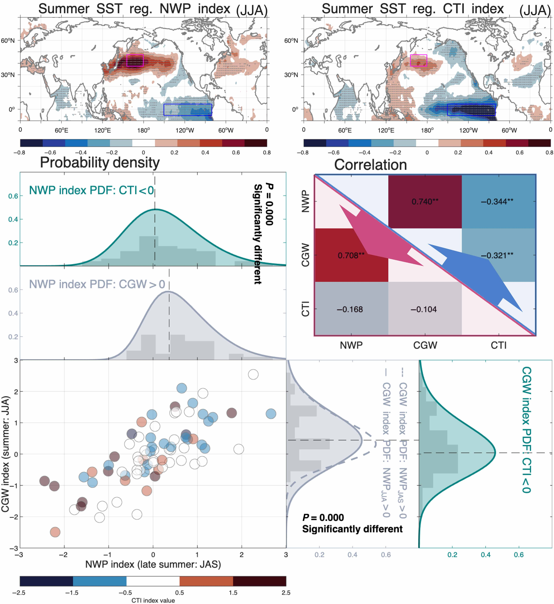
图 5. 观测中 CGW 相对于 ENSO 强迫在驱动西北太平洋海洋热浪中的主导地位。
Fig. 5. CGW dominance over ENSO forcing in driving NWP MHWs in observations.
夏季（JJA）海表温度距平对（A）夏季 NWP 指数和（B）夏季 CTI 指数的回归（乘以 −1 以便比较）。
Summer (JJA) SSTA regression onto (A) summer NWP and (B) summer CTI indices (multiplied by −1 for comparison).
（C）该图包含三个要素：（i）上部：两条概率密度函数（PDF），分别显示热带冷却条件（夏季 CTI < 0）和夏季 CGW 为正条件下的晚夏（JAS）NWP；黑色虚线表示相应众数值；（ii）右下：两条 PDF，分别显示夏季 CTI 为冷却和夏季 NWP 为暖条件下的夏季 CGW（粗紫色虚线表示晚夏 NWP 为暖的条件）；（iii）左下：晚夏 NWP 指数与夏季 CGW 指数逐年值的散点图，点的颜色按其相应夏季 CTI 值着色。
(C) The figure contains three elements: (i) Top: Two probability density functions (PDFs) showing late-summer (JAS) NWP under cooling tropical conditions (summer CTI < 0) and positive summer CGW conditions; black dashed lines denote corresponding modal values; (ii) Bottom right: Two PDFs showing summer CGW under cooling summer CTI and warm summer NWP conditions (thick purple dash line indicates warm late-summer NWP conditions); (iii) Bottom left: Scatter plot of yearly values of late-summer NWP versus summer CGW indices, with points colored according to their corresponding summer CTI values.
（i）和（ii）中的分布显著不同［Kolmogorov-Smirnov（KS）检验：NWP 与 CGW 均为 P < 0.001］。
Distributions in (i) and (ii) differ significantly [Kolmogorov-Smirnov (KS) test: P < 0.001 for both NWP and CGW].
（D）三个指数之间的相关热图（右上为标准相关系数，左下为偏相关系数），星号标出 99% 显著性。
(D) Correlation heatmap between the three indices (standard correlation coefficients in top right, partial correlation coefficients in bottom left), with asterisks marking 99% significance.
品红框表示西北太平洋区域，蓝框表示 CTI 区域［（A）和（B）］。
Magenta boxes indicate the NWP regions, and blue boxes indicate the CTI regions [(A) and (B)].
（A）和（B）中的灰色圆点表示 95% 置信水平的统计显著性。
Gray dots in (A) and (B) denote statistical significance at the 95% confidence level.
在观测记录（1948–2024）中，晚夏 NWP 指数与夏季 CGW 指数表现出强正相关（r = 0.740，P < 0.001；图 5C，左下），凸显 CGW 在驱动西北太平洋海洋热浪中的核心作用。
In the observational record (1948–2024), late-summer NWP and summer CGW indices exhibit a strong positive correlation (r = 0.740, P < 0.001; Fig. 5C, bottom left), highlighting the CGW’s central role in driving NWP MHWs.
这一关系在厄尔尼诺（CTI > +0.5 SD；暖色）和拉尼娜（CTI < −0.5 SD；冷色）条件下均持续存在，表明 CGW 强迫独立于 ENSO 位相而运作。
This relationship persists through both El Niño (CTI > +0.5 SD; warm-colored) and La Niña (CTI < −0.5 SD; cool-colored) conditions, indicating that CGW forcing operates independently of ENSO phase.
为分离 ENSO 与 CGW 的贡献，我们在偏斜高斯分布假定下，使用 1000 次抽样的 bootstrap 检验，比较了拉尼娜（CTI < 0）和 CGW 为正（CGW > 0）条件下晚夏 NWP 指数的 PDF（图 5C，上部）。
To disentangle ENSO and CGW contributions, we compared the PDFs of the late-summer NWP index under La Niña (CTI < 0) and positive CGW (CGW > 0) conditions using 1000-sample bootstrap tests with a skewed Gaussian distribution assumption (Fig. 5C, top).
Kolmogorov-Smirnov（KS）检验表明两条 PDF 之间存在统计显著差异（P < 0.001），从而强化了 CGW 与 ENSO 代表西北太平洋海洋热浪的不同强迫机制。
A Kolmogorov-Smirnov (KS) test indicates a statistically significant difference between the two PDFs (P < 0.001), reinforcing that CGW and ENSO represent separate forcing mechanisms for NWP MHWs.
此外，CGW 为正条件下 NWP 指数的众数（M = 0.364 SD）几乎是拉尼娜条件下（M = 0.040 SD）的九倍，表明 CGW 强迫比单独的拉尼娜激发更强的西北太平洋增暖。
Furthermore, the modal NWP index under positive CGW (M = 0.364 SD) is nearly nine times greater than under La Niña (M = 0.040 SD), demonstrating that CGW forcing elicits stronger NWP warming than La Niña alone.
类似的 PDF 分析比较了负 CTI 与正 NWP 条件下的夏季 CGW 指数值（图 5C，右下），进一步表明局地西北太平洋 SST 增暖比 ENSO 强迫更有效地放大夏季 CGW 型。
A similar PDF analysis comparing summer CGW index values under negative CTI and positive NWP conditions (Fig. 5C, bottom right) further demonstrates that local NWP SST warming more effectively amplifies the summer CGW pattern than ENSO forcing.
KS 检验确认这些分布之间存在显著差异（P < 0.001）：正 NWP 条件下 CGW 指数 PDF 的众数值（M = 0.444 SD）约为负 CTI 条件下（M = 0.040 SD）的 11 倍，凸显局地西北太平洋增暖比拉尼娜强迫更有效地激发 CGW 型。
A KS test confirms a significant difference between these distributions (P < 0.001), with the CGW index’s PDF under positive NWP conditions showing a modal value (M = 0.444 SD) that is ~11 times greater than under negative CTI conditions (M = 0.040 SD), highlighting that local NWP warming is more efficient at exciting the CGW pattern than La Niña forcing.
我们通过计算 CTI、NWP 和 CGW 指数之间的标准相关与偏相关，评估 ENSO 对夏季 CGW-NWP 关系的影响（图 5D）。
We evaluated the influence of ENSO on the summer CGW-NWP relationship by computing both standard and partial correlations among the CTI, NWP, and CGW indices (Fig. 5D).
标准 CGW-NWP 相关为 0.740，解释约 55% 的 NWP 方差；去除 ENSO 影响后，偏 CGW-NWP 相关仍保持偏高（r = 0.708），表明这一联系在很大程度上独立于 ENSO。
The standard CGW-NWP correlation is 0.740, explaining ~55% of NWP variance; after removing ENSO effects, the partial CGW-NWP correlation remains high (r = 0.708), demonstrating that this linkage is largely independent of ENSO.
相比之下，CTI-NWP 标准相关为 −0.344（约 10% 的方差），一旦计入 CGW 影响，便降至 −0.168（约 3% 的方差，P = 0.181），从而变得不显著。
In contrast, the CTI-NWP standard correlation is −0.344 (~10% of variance), and it falls to −0.168 (~3% of variance, P = 0.181) once CGW influences are accounted for, rendering it nonsignificant.
类似地，当 NWP 指数保持不变时，CTI-CGW 相关从 −0.321 降至 −0.104（P = 0.406）。
Similarly, the CTI-CGW correlation drops from −0.321 to −0.104 (P = 0.406) when the NWP index is held constant.
这些结果表明，ENSO 对西北太平洋海洋热浪和 CGW 变率即使有贡献也仅是边际的，而 CGW 本身作为西北太平洋海洋热浪的主要驱动因子脱颖而出，在很大程度上独立于 ENSO 强迫。
These results indicate that ENSO contributes only marginally, if at all, to NWP MHWs and CGW variability, whereas the CGW itself stands out as the primary driver of NWP MHWs, largely independent of ENSO forcing.
讨论
讨论
DISCUSSION
本研究建立了一个理解西北太平洋海洋热浪形成与持续性的框架，强调中纬度大气波动动力学与跨海盆相互作用的关键作用。
This study establishes a framework for understanding the formation and persistence of NWP MHWs, emphasizing the pivotal role of extratropical atmospheric wave dynamics and trans-basin interactions.
在夏季，一个准定常 5 波 CGW 型驱动西北太平洋增暖，并被一个自我强化的反馈环路所放大：CGW 触发西北太平洋增暖，随后该增暖又增强 CGW（图 6A）。
During summer, a quasistationary wavenumber 5 CGW pattern drives NWP warming, which is amplified by a self-reinforcing feedback loop: The CGW triggers NWP warming, which subsequently strengthens the CGW (Fig. 6A).
这一局地海–气耦合在整个延长的暖半年中维持海洋热浪。
This local ocean-atmosphere coupling sustains MHWs throughout the extended warm half-year.
此外，跨海盆反馈将北大西洋与西北太平洋联系起来：夏季由 CGW 诱发的北大西洋北部（NNA）增暖因海洋热惯性而持续至冬季。
Additionally, trans-basin feedback connects the North Atlantic to the NWP: summer CGW-induced warming in the NNA persists into winter due to oceanic thermal inertia.
在夏季 CGW 消散之后，这一持续至冬季的 NNA 增暖在欧亚上空激发大尺度波列（图 6B），从而在整个延长的冷半年中维持西北太平洋海洋热浪。
Following the dissipation of the summer CGW, this lingering winter NNA warming generates a large-scale wave train across Eurasia (Fig. 6B), sustaining NWP MHWs through the extended cold half-year.
这两个季节性机制共同解释了西北太平洋海洋热浪如何在整个年循环中持续，并在连续年份中反复出现时驱动多年际事件。
Collectively, these two seasonal mechanisms explain how NWP MHWs persist across a full annual cycle and, when repeated across consecutive years, drive multiyear events.
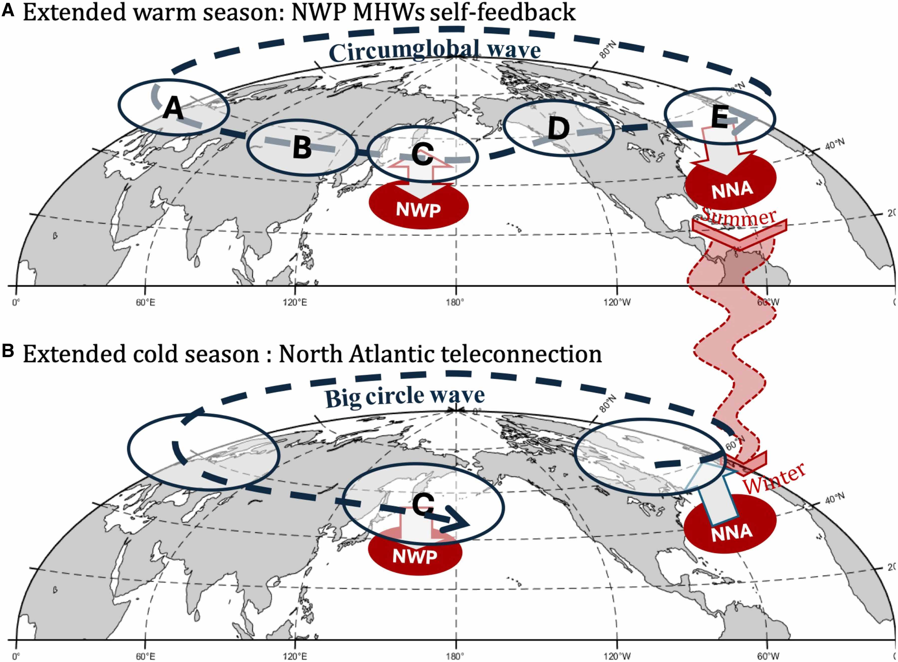
图 6. 通过中纬度大气波动跨季节维持西北太平洋海洋热浪的跨海盆反馈机制概览。
Fig. 6. Overview of trans-basin feedback mechanisms sustaining NWP MHWs across seasons through extratropical atmospheric waves.
（A）延长暖季的自我强化机制：具有高压中心 A 至 E 的 CGW 型驱动西北太平洋海洋热浪。
(A) Extended warm season self-reinforcing mechanism: The CGW pattern with high-pressure centers A to E drives NWP MHWs.
西北太平洋与中心 C 之间的红色箭头示意自我强化反馈，即西北太平洋增暖增强 CGW 型。
Red arrows between NWP and center C illustrate the self-reinforcing feedback where NWP warming strengthens the CGW pattern.
与此同时，CGW 驱动 NNA 增暖，由中心 E 指向 NNA 的箭头所示。
Simultaneously, the CGW drives warming in the NNA, shown by arrows from center E to NNA.
（B）延长冷季遥相关：北大西洋通过大圆波动型影响西北太平洋。
(B) Extended cold teleconnection: The North Atlantic influences NWP through a great-circle wave pattern.
红色箭头显示中心 C 上空的高压如何维持西北太平洋增暖，而蓝色箭头表示 NNA 在激发该遥相关中的作用。
The red arrow shows how high pressure over center C maintains NWP warming, whereas the blue arrow indicates NNA’s role in exciting this teleconnection.
西北太平洋与 NNA 区域均以红色突出显示。
Both NWP and NNA regions appear highlighted in red.
连接（A）与（B）的红色阴影箭头表示 NNA 增暖通过海洋记忆持续至冬季。
The red-shaded arrow connecting (A) and (B) represents NNA warming persisting through ocean memory into winter.
蓝色虚线标示波动路径。
Dashed blue lines trace wave pathways.
长达一个世纪的再分析资料集（20thC-Reav3）、CMIP6 历史模拟以及近期观测资料（NCEP-R1）共同揭示，自 1970 年以来 CGW–西北太平洋相互作用与跨海盆反馈在增强，这很可能由全球变暖、大西洋多十年际振荡（AMO）的位相转变，或二者共同驱动。
Century-long reanalysis datasets (20thC-Reav3), CMIP6 historical simulations, and recent observational data (NCEP-R1) collectively reveal a strengthening of the CGW-NWP interaction and trans-basin feedback since 1970, likely driven by global warming, the AMO’s phase shift, or both.
这些增强表明，在持续的全球变暖背景下，西北太平洋海洋热浪有可能变得更为严重、更为持久、更为频繁。
These enhancements suggest a potential for increasingly severe, prolonged, and frequent NWP MHWs under continued global warming.
尽管我们的 AGCM 试验表明西北太平洋海表温度距平可以激发 CGW，我们承认其他大尺度因子也可能对驱动 CGW 型有贡献。
While our AGCM experiments demonstrate that NWP SST anomalies can excite the CGW, we acknowledge that other large-scale factors may also contribute to driving the CGW pattern.
由北极放大（57, 58）、气溶胶强迫（59, 60）、急流移动（61）以及其他过程引起的大气环流变化，可能影响 CGW 活动及其与西北太平洋海洋热浪的关系。
Changes in atmospheric circulation due to Arctic amplification (57, 58), aerosol forcing (59, 60), jet stream shifts (61), and other processes could influence CGW activity and its relationship with NWP MHWs.
全面考察这些因子在 CGW–西北太平洋海洋热浪关系中的作用，需要超出本研究范围的大量额外分析。
A comprehensive investigation of the roles of these factors in the CGW-NWP MHW relationship would require extensive additional analyses beyond the scope of the present study.
我们在此建立的物理框架——表明西北太平洋的海–气耦合可通过自我强化反馈激发并维持 CGW 型——为未来研究这些额外因子如何调制或增强这一自我强化反馈机制提供了基础。
The physical framework that we establish here, demonstrating that ocean-atmosphere coupling in the NWP can excite and sustain the CGW pattern through self-reinforcing feedback, provides a foundation for future investigations into how these additional factors may modulate or enhance this self-reinforcing feedback mechanism.
尽管我们的框架解释了使西北太平洋海洋热浪能够跨季节、并可能多年持续的机制，但当更强的大气或海洋内部动力学打断反馈环路时，海洋热浪即告终止。
While our framework explains the mechanisms enabling multiseasonal and potential multiyear persistence of NWP MHWs, MHW termination occurs when the feedback loops are interrupted by stronger internal atmospheric or oceanic dynamics.
在某些年份或季节，大气内部变率可能压过海–气耦合机制。
During certain years or seasons, internal atmospheric variability may overwhelm the air-sea coupling mechanisms.
例如，当大气内部动力学有利于西北太平洋区域出现异常低压条件、而非通常由暖海表温度距平诱发的高压异常时，夏季自我强化反馈便无法建立。
For example, when the atmosphere’s internal dynamics favor anomalous low-pressure conditions over the NWP region rather than the high-pressure anomaly that would normally be induced by warm SSTAs, the summer self-reinforcing feedback cannot be established.
类似地，在冬季，若大气内部变率产生的环流型阻止了对 NNA 增暖所预期的高压响应形成，则跨海盆遥相关便无法维持西北太平洋海洋热浪。
Similarly, during winter, if atmospheric internal variability produces circulation patterns that prevent the formation of the expected high-pressure response to NNA warming, then the trans-basin teleconnection fails to sustain the NWP MHW.
在此类情形下，尽管西北太平洋与 NNA 区域均存在暖海表温度距平，正反馈机制仍被打断，海洋热浪事件随之终止。
In such cases, despite the presence of warm SST anomalies in both the NWP and NNA regions, the positive feedback mechanisms are interrupted and the MHW event terminates.
尽管本研究着重刻画 CGW–西北太平洋反馈与跨海盆反馈而非其根本成因，若干因子可能对这些演变中的动力学有贡献：混合层深度减小从而增强海表温度–大气耦合（19, 20, 62, 63），急流位置的纬度移动从而重塑 Rossby 波波导（57, 61, 64），北极放大从而减弱经向温度梯度并调制大气波动动力学（51, 57, 58, 65），以及西北太平洋区域附近北太平洋阻塞活动的变化（50），等等。
Although our study emphasizes delineating the CGW-NWP and trans-basin feedbacks rather than their root causes, several factors may contribute to these evolving dynamics: decreasing mixed-layer depths that enhance SST-atmosphere coupling (19, 20, 62, 63), latitudinal shifts in jet stream location that reshape Rossby wave waveguides (57, 61, 64), Arctic amplification that weakens meridional temperature gradients and modifies atmospheric wave dynamics (51, 57, 58, 65), and changes in North Pacific blocking activities near the NWP region (50), among others.
需要进一步研究中纬度大气波动动力学的演变特征、相关的大气–海洋与跨海盆相互作用，以及它们在驱动影响海洋生态系统、渔业和沿海社区的海洋极端事件中的作用。
Further research is needed to explore the evolving nature of extratropical atmospheric wave dynamics, associated atmosphere-ocean and trans-basin interactions, and their roles in driving ocean extreme events that affect marine ecosystems, fisheries, and coastal communities.
方法
方法
METHODS
观测资料
观测资料
Observational data
本研究使用了覆盖不同时段的多套观测资料集。
This study uses multiple observational datasets spanning different temporal ranges.
我们从哈德莱中心海冰与海表温度资料集（66）获取了空间分辨率为 1° × 1° 的月平均海表温度资料（1870 年至 2024 年 9 月）。
We obtained monthly SST data at 1° by 1° spatial resolution from the Hadley Centre Sea Ice and SST dataset (66) (1870 to September 2024).
我们从 NCEP/NCAR 再分析（67）获取大气变量，包括 200 hPa 位势高度（Z200）、200 hPa 纬向风和经向风（U200 和 V200）以及向下的地表短波辐射，空间分辨率为 2.5° × 2.5°（1948 年至 2024 年 9 月）。
We sourced atmospheric variables, including geopotential height at 200 hPa (Z200), zonal and meridional winds at 200 hPa (U200 and V200), and downward surface shortwave radiation, from NCEP/NCAR Reanalysis (67) at 2.5° by 2.5° spatial resolution (1948 to September 2024).
我们从全球海洋资料同化系统资料集（68）获取混合层热收支分析所需的海洋变量，包括混合层深度、位温、水平海流和净海表热通量（SHF），空间分辨率为 1° × 1/3°（1980 年至 2024 年 9 月）。
We obtained ocean variables essential for mixed-layer heat budget analysis, including mixed-layer depth, potential temperature, horizontal currents, and net SHF, from the Global Ocean Data Assimilation System dataset (68) at 1° by 1/3° spatial resolution (1980 to September 2024).
历史 CMIP6 多模式资料
历史 CMIP6 多模式资料
Historical CMIP6 multimodel data
我们分析了 43 个 CMIP6 模式（69）（列于表 S1）覆盖 1850–2014 年的历史模拟。
We analyzed historical simulations from 43 CMIP6 models (69) (listed in table S1) covering the period 1850–2014.
为保持一致性，我们通过双线性插值将所有模式输出重映射到 1° × 1° 分辨率网格。
For consistency, we remapped all model outputs onto a 1° by 1° resolution grid via bilinear interpolation.
我们提取了地表气温（SAT；在海表温度不可用时用作海表温度的代理）和 Z200，以与观测场保持一致。
We extracted surface air temperature (SAT; used as an SST proxy where SST was unavailable) and Z200 for consistency with observational fields.
第 20 世纪再分析 V3 资料
第 20 世纪再分析 V3 资料
The 20th Century Reanalysis V3 data
为扩展长期视角，我们纳入 NOAA-CIRES-DOE 第 20 世纪再分析 V3 资料集（70），时段为 1850 至 2014 年，空间分辨率为 1° × 1°。
To extend our long-term perspective, we include the NOAA-CIRES-DOE 20th Century Reanalysis V3 dataset (70), spanning from 1850 to 2014, at 1° by 1° spatial resolution.
与 CMIP6 相同，我们使用 SAT 作为海表温度的替代，并分析 Z200。
As with CMIP6, we use SAT as a surrogate for SST and analyze Z200.
资料处理
资料处理
Data processing
对于上述所有资料集，我们将距平计算为相对 1981–2010 年季节气候态的偏差。
For all datasets described above, we computed anomalies as deviations from the 1981–2010 seasonal climatology.
默认对所有变量去除线性趋势。
Linear trends were removed from all variables by default.
气候指数
气候指数
Climate indices
为分析海洋热浪与大气型之间的关系，构建了若干关键气候指数。
Several key climate indices were constructed to analyze the relationships between MHWs and atmospheric patterns.
NWP 指数定义为 37.5°N 至 47.5°N、155°E 至 180°E 区域的面积平均海表温度距平，用以捕捉与西北太平洋海洋热浪相关的增暖行为与变率，而非采用基于百分位的正式海洋热浪定义。
The NWP index was defined as the area-average SSTAs over the region 37.5°N to 47.5°N, 155°E to 180°E to capture the warming behavior and variability associated with NWP MHWs, rather than applying a formal percentile-based MHW definition.
CGW 指数由五个关键中心（A 至 E）的 Z200 距平平均得到：中心 A（30°N 至 45°N，10°E 至 45°E）、中心 B（37.5°N 至 52.5°N，105°E 至 140°E）、中心 C（40°N 至 55°N，145°E 至 180°E）、中心 D（42.5°N 至 57.5°N，150°W 至 115°W）以及中心 E（40°N 至 55°N，70°W 至 35°W）。
The CGW index was derived by averaging the Z200 anomalies at five key centers (A to E): center A (30°N to 45°N, 10°E to 45°E), center B (37.5°N to 52.5°N, 105°E to 140°E), center C (40°N to 55°N, 145°E to 180°E), center D (42.5°N to 57.5°N, 150°W to 115°W), and center E (40°N to 55°N, 70°W to 35°W).
最终的 CGW 指数为这五个标准化中心值之和。
The final CGW index represents the sum of these five normalized center values.
各个中心指数（例如 CGW-C）表示各自区域平均的标准化 Z200 距平。
Individual center indices (e.g., CGW-C) represent the normalized Z200 anomaly averaged over their respective regions.
冷舌指数（CTI）定义为赤道东太平洋区域（6°S 至 4°N，150°W 至 80°W）的面积平均海表温度距平。
The CTI was defined as the area-averaged SSTAs over the eastern equatorial Pacific region (6°S to 4°N, 150°W to 80°W).
NNA 指数定义为 35°N 至 55°N、70°W 至 10°W 区域的面积平均海表温度距平。所有指数在分析前均经过标准化。
The NNA index was defined as the area-averaged SSTA over the region 35°N to 55°N, 70°W to 10°W. All indices are normalized prior to analysis.
统计显著性检验
统计显著性检验
Statistical significance test
相关与回归系数的统计显著性采用学生 t 检验评估，并按照（71）调整自由度以考虑时间自相关。
Statistical significance for correlation and regression coefficients was assessed using Student’s t test, with degrees of freedom adjusted to account for temporal autocorrelation following (71).
为考虑时间持续性导致的独立样本减少，我们将有效自由度计算为 N_eff = N × (1 − r1 r2) / (1 + r1 r2)
To account for the reduction in independent samples due to temporal persistence, we calculated the effective degrees of freedom as N_eff = N × (1 − r1 r2) / (1 + r1 r2)
其中 N 为样本量，r1 为预报因子时间序列的滞后 1 自相关，r2 为预报量时间序列的滞后 1 自相关。
where N is the sample size, r1 is the lag-1 autocorrelation of the predictor time series, and r2 is the lag-1 autocorrelation of the predictand time series.
对于空间回归分析，r2 表示面积平均预报量场的滞后 1 自相关，作为保守估计。
For spatial regression analyses, r2 represents the lag-1 autocorrelation of the area-averaged predictand field as a conservative estimate.
为比较分布，采用 KS 检验评估两个样本分布是否显著不同。
For comparing distributions, the KS test was applied to assess whether two sample distributions significantly differ.
所有检验均在显著性水平 α = 0.05 或 0.01 下进行。
All tests were applied at significance levels of α = 0.05 or 0.01.
局地波动活动（LWA）分析
局地波动活动（LWA）分析
LWA analysis
为量化波动振幅并识别不同的波包，我们按照（48）计算局地波动活动（LWA）。
To quantify wave amplitude and identify distinct wave packets, we calculated LWA following (48).
LWA 度量急流相对其纬向平均位置的经向位移，从而提供识别高压/阻塞区域的客观度量。
LWA measures the meridional displacement of the jet stream from its zonal-mean position, providing an objective metric for identifying high-pressure/blocking regions.
局地波动活动定义为 A(λ, φ, t) = [1/(a cos φ)] ∫_{φs}^{φ} (Q − Q̄) a cos φ′ dφ′
The LWA is defined as A(λ, φ, t) = [1/(a cos φ)] ∫_{φs}^{φ} (Q − Q̄) a cos φ′ dφ′
其中 A 为局地波动活动，λ 为经度，φ 为纬度，a 为地球半径，Q 为给定气压层（此处为 200 hPa）的准地转位涡（QGPV），Q¯ 为 QGPV 的纬向平均，φs 为南侧参考纬度。
where A is the LWA, λ is longitude, φ is latitude, a is Earth’s radius, Q is quasigeostrophic potential vorticity (QGPV) at a given pressure level (200 hPa here), Q¯ is the zonal mean of QGPV, and φs is the southern reference latitude.
准地转位涡计算为 Q = f + (1/(a cos φ)) ∂v/∂λ − (1/(a cos φ)) ∂(u cos φ)/∂φ
The QGPV is calculated as Q = f + (1/(a cos φ)) ∂v/∂λ − (1/(a cos φ)) ∂(u cos φ)/∂φ
其中 f 为科里奥利参数，u 和 v 分别为纬向风和经向风。
where f is the Coriolis parameter, and u and v are zonal and meridional winds, respectively.
波数谱分析
波数谱分析
Wavenumber spectral analysis
为识别大气环流型中的主导纬向波数，我们对去除 ENSO 信号后的 200 hPa 经向风（V200*）回归到相应指数上的结果进行谱分析。
To identify the dominant zonal wavenumbers in the atmospheric circulation patterns, we performed spectral analysis on the 200-hPa meridional wind with ENSO signal removed (V200*) regressed onto the corresponding indices.
选择 V200* 而非 Z200*，是因为它能更好地表征波动状结构。
V200* was chosen over Z200* for its better representation of wave-like structures.
对这些纬向回归结果施加快速傅里叶变换，将空间距平分解为波数分量。
A fast Fourier transform was applied to these zonal regressions to decompose the spatial anomalies into wavenumber components.
海洋混合层热收支
海洋混合层热收支
Ocean mixed-layer heat budget
混合层温度倾向方程（72）可表示为 ∂Tm/∂t = [Qnet − Qsw(h)]/(ρ cp h) − (um ∂Tm/∂x + vm ∂Tm/∂y) − we (Tm − Th)/h + DIFF
The mixed-layer temperature tendency equation (72) can be expressed as ∂Tm/∂t = [Qnet − Qsw(h)]/(ρ cp h) − (um ∂Tm/∂x + vm ∂Tm/∂y) − we (Tm − Th)/h + DIFF
其中 Tm 为混合层内垂直平均的位温，t 为时间，Qnet 为净海表热通量，Qsw(h) 为穿透混合层底的短波辐射，ρ = 1026 kg m−3 为海水密度，cp = 4200 J kg−1K−1 为海水比热容，h 为混合层深度，(um,vm) 为混合层内垂直平均的水平流速，we 为混合层底的夹卷速度，Th 为混合层底部的位温。
where Tm is the potential temperature vertically averaged over the mixed layer, t is time, Qnet is the net SHF, Qsw(h) is the shortwave radiation that penetrates through the base of the mixed layer, ρ=1026 kg m−3 is seawater density, cp=4200 J kg−1K−1 is the specific heat capacity of seawater, h is the mixed-layer depth, (um,vm) is the horizontal current velocity vertically averaged over the mixed layer, we is entrainment velocity at the base of the mixed layer, and Th is potential temperature at the bottom of the mixed layer.
DIFF 项表示扩散。
The term DIFF represents diffusion.
在我们的分析中，垂直平流与 DIFF 一并作为残差处理。
In our analysis, vertical advection and DIFF are treated together as residuals.
深度 h 处的穿透短波辐射按指数衰减函数参数化（73） Qsw(h) ≈ Qsw(0) [α e^{−h/k1} + (1 − α) e^{−h/k2}]
The penetrative shortwave radiation at depth h is parameterized following an exponential decay function (73) Qsw(h) ≈ Qsw(0) [α e^{−h/k1} + (1 − α) e^{−h/k2}]
其中 Qsw(0) 为海表短波辐射，α = 0.58 为较长穿透谱段的能量份额，k1=0.35 m 和 k2=23 m 分别为长波段与短波段的衰减系数。
where Qsw(0) is the surface shortwave radiation, α = 0.58 is the fraction of energy in the longer-penetrating spectral band, k1=0.35 m and k2=23 m are the attenuation coefficients for the long and shortwave bands, respectively.
波导分析：定常波数与 Rossby 波相速度
波导分析：定常波数与 Rossby 波相速度
Waveguide analysis: Stationary wavenumber and Rossby wave phase speed
定常波数（Ks）与 Rossby 波相速度（cp）是描述行星波传播与行为的大气动力学基本参数。
The stationary wavenumber (Ks) and the Rossby wave phase speed (cp) are fundamental parameters in atmospheric dynamics that describe the propagation and behavior of planetary waves.
定常波数 Ks 定义为（74） Ks² = β∗ / U
The stationary wavenumber Ks is defined as (74) Ks² = β∗ / U
其中 β∗ 为有效经向绝对涡度梯度，由下式给出 β∗ = β − ∂²U/∂y²
where β∗ is the effective meridional absolute vorticity gradient, given by β∗ = β − ∂²U/∂y²
其中 β = df/dy = 2Ω cos ϕ / a 为行星涡度梯度，Ω 为地球自转角速度，ϕ 为纬度，a 为地球半径，U 为纬向风速。
where β = df/dy = 2Ω cos ϕ / a is the planetary vorticity gradient, Ω is Earth’s rotation rate, ϕ is latitude, a is Earth’s radius, and U is the zonal wind speed.
方程 3 同时考虑了行星涡度效应和背景风曲率的影响，从而在确定定常 Rossby 波的空间尺度时更为精确。
Equation 3 accounts for both planetary vorticity effects and the influence of the background wind curvature, making it more precise in determining the spatial scale of stationary Rossby waves.
Ks 表示 Rossby 波传播的阈值：纬向波数 k < Ks 的波动可自由传播，而 k > Ks 的波动衰减；当 k ≈ Ks 时，波动沿波导传播，放大或衰减最小（35, 75）。
The Ks represents the threshold for Rossby wave propagation: waves with zonal wavenumber k < Ks propagate freely, whereas waves with k > Ks decay; when k ≈ Ks, waves propagate along the waveguide with minimal amplification or attenuation (35, 75).
Rossby 波相速度（cp）由下式给出 cp = U − β/(k² + l²)
The Rossby wave phase speed (cp) is given by cp = U − β/(k² + l²)
其中 k 和 l 分别为纬向和经向波数。
where k and l are the zonal and meridional wavenumbers, respectively.
在我们的分析中，通过设定 l = 0 聚焦于纯纬向传播。
In our analysis, we focus on purely zonal propagation by setting l = 0.
去除 ENSO 影响
去除 ENSO 影响
Removing ENSO influence
为分离 CGW 的影响，我们在每个格点上从原始距平中减去各变量对冷舌指数（CTI）的线性回归型，从而得到残差距平（以星号表示），如下 X∗ = X − γ · CTI
To isolate the CGW’s influence, we removed the ENSO impact by subtracting the linear regression patterns of each variable onto CTI from the original anomalies at each grid point, creating residual anomalies (denoted with asterisks) as follows X∗ = X − γ · CTI
其中 X 表示海表温度、Z200 或 V200，γ 为变量 X 对 CTI 指数回归的回归系数图。
where X represents either SST, Z200, or V200, and γ is the regression coefficient map of variable X regressed onto the CTI index.
该方法有效去除与 ENSO 相关变率的线性分量，同时保留独立信号，包括与 CGW 型相关的信号。
This approach effectively removes the linear component of ENSO-related variability while preserving independent signals, including those associated with the CGW pattern.
一阶自回归 AR(1) 模式
一阶自回归 AR(1) 模式
The first-order autoregressive AR(1) model
一阶自回归 AR(1) 模式表示为 ρ(k) = αk ρ(0)
A first-order autoregressive AR(1) model is expressed as ρ(k) = αk ρ(0)
其中 α 表示 NWP 指数的滞后 1 个月自相关，ρ(0) 表示 NWP–CGW 相关的峰值，k 为峰值之后的月数。
where α represents the lag-1-month autocorrelation of the NWP index, ρ(0) denotes the peak NWP-CGW correlation, and k is the number of months after the peak.
该模式假定 NWP 海表温度距平在与 CGW 的峰值相关之后的衰减受一阶自回归过程支配，系统记忆由滞后 1 个月自相关系数 α 决定。
This model assumes that the decay of NWP SSTAs after the peak correlation with the CGW is governed by a first-order autoregressive process, where the memory of the system is determined by the lag-1-month autocorrelation coefficient α.
正压能量转换
正压能量转换
Barotropic energy conversion
为评估冬季波列中的涡旋–平均流相互作用，我们计算了正压转换项 CK = −u′v′ ∂ū/∂y − (u′² − v′²) ∂ū/∂x
To assess eddy-mean flow interactions in the winter wave train, we calculated the barotropic conversion term CK = −u′v′ ∂ū/∂y − (u′² − v′²) ∂ū/∂x
其中 u′ 和 v′ 为相对纬向平均的偏差，ū 为时间平均的纬向平均纬向风。
where u′ and v′ are deviations from the zonal mean and u¯ is the time-mean zonal-mean zonal wind.
负的 CK 表示能量由涡旋向平均流输送，有助于波动放大；正的 CK 表示能量由平均流向涡旋输送。
Negative CK indicates energy transfer from eddies to the mean flow, contributing to wave amplification; positive CK indicates energy transfer from the mean flow to eddies.
在回归分析前施加空间平滑（5 × 5 格点），以突出大尺度型。
Spatial smoothing (5 by 5 grid points) was applied before regression analysis to highlight large-scale patterns.
随机能量平衡模式
随机能量平衡模式
Stochastic energy balance model
为验证混合层深度（MLD）与海表温度持续性之间的关系，我们采用了随机能量平衡模式框架。
To validate the relationship between MLD and SST persistence, we applied a stochastic energy balance model framework.
海洋混合层温度演变可近似为一阶自回归过程，由随机大气强迫与热阻尼驱动 dT/dt = −λT + F(t)
The ocean mixed-layer temperature evolution can be approximated by a first-order autoregressive process driven by stochastic atmospheric forcing and thermal damping dT/dt = −λT + F(t)
其中 T 为海表温度距平，λ 为阻尼系数，F(t) 表示随机大气强迫。
where T is the SST anomaly, λ is the damping coefficient, and F(t) represents stochastic atmospheric forcing.
阻尼时间尺度为 τ=C/λ，其中 C=ρcp H 为混合层热容量，ρ 为海水密度，cp 为比热容，H 为混合层深度。
The damping timescale τ=C/λ, where C=ρcp H is the heat capacity of the mixed layer, ρ is seawater density, cp is specific heat capacity, and H is the mixed-layer depth.
对于月时间步长（Δt = 1 month），海表温度距平的滞后 1 自相关 α 通过下式与阻尼时间尺度相联系 α = e^{−Δt · λ /(ρ cp H)}
For monthly time steps (Δt = 1 month), the lag-1 autocorrelation α of SST anomalies is related to the damping timescale through α = e^{−Δt · λ /(ρ cp H)}
对两边取自然对数 ln(α) = −Δt · λ /(ρ cp H)
Taking the natural logarithm of both sides ln(α) = −Δt · λ /(ρ cp H)
这表明 ln(α) 与 H 成反比。因此，对于混合层深度不同的两个区域 ln(α1)/ln(α2) = H2/H1
This shows that ln(α) is inversely proportional to H. Therefore, for two regions with different MLD ln(α1)/ln(α2) = H2/H1
我们使用气候态混合层深度值计算理论自相关比值，并与观测的滞后 1 自相关进行比较，以验证混合层深度差异可以解释海表温度持续性的差别。
we calculated the theoretical autocorrelation ratio using climatological MLD values and compared it with the observed lag-1 autocorrelations to validate that MLD differences explain the differential SST persistence.
强迫 AGCM 试验
强迫 AGCM 试验
Forced AGCM experiments
我们使用 CAM6 的 F1850 组件集（76, 77）开展强迫 AGCM 试验，水平分辨率配置为约 2.5° 经度 × 1.9° 纬度，垂直 30 层，自地表延伸至 3.65 hPa。
We conducted forced AGCM experiments using the F1850 compset of CAM6 (76, 77), configured with a horizontal resolution of ~2.5° longitude × 1.9° latitude and 30 vertical layers extending from the surface to 3.65 hPa.
共进行了三组试验：一组控制（CTRL）试验，以及两组敏感性试验（NWP 和 NNA），每组包含 10 个集合成员。
A total of three experiments were performed: a control (CTRL) run, and two sensitivity runs (NWP and NNA), each consisting of 10 ensemble members.
在 CTRL 试验中，规定月变化的气候态海表温度与海冰资料（78）驱动 CAM6。
In the CTRL run, monthly-varying climatological SST and sea ice data (78) were prescribed to drive CAM6.
NWP 与 NNA 试验以理想化高斯型海表温度型作为强迫（图 S18）。
The NWP and NNA runs were forced with idealized Gaussian-shaped SST patterns (fig. S18).
NWP AGCM 试验强迫中心具有 2°C 距平，东西（W-E）方向 e 折半径为 15°，南北（S-N）方向为 10°。
The NWP AGCM Run forcing center had a 2°C anomaly with an e-folding radius of 15° in the west-east (W-E) direction and 10° in the south-north (S-N) direction.
NNA AGCM 试验强迫中心具有 1°C 距平，W-E 方向 e 折半径为 15°，S-N 方向为 15°。
The NNA AGCM Run forcing center had a 1°C anomaly with an e-folding radius of 15° in the W-E direction and 15° in the S-N direction.
每组试验积分 2 年。
Each experiment was integrated for 2 years.
通过分析敏感性试验与 CTRL 试验之差，确定大气对规定海表温度距平强迫的响应。
The differences between the sensitivity runs and the CTRL run were analyzed to determine the atmospheric response to the prescribed SSTA forcing.
致谢
致谢
Acknowledgments
我们感谢审稿人，其建设性意见极大地改进了本稿的分析与表述清晰度。
We thank the reviewers whose constructive comments greatly improved the analysis and clarity of this manuscript.
我们衷心感谢为本研究所用观测数据集与模式输出提供支持的机构与数据中心。
We gratefully acknowledge the institutions and data centers that provided the observational datasets and model outputs used in this study.
高性能计算资源由美国国家大气研究中心（NCAR）计算与信息系统实验室提供，该实验室由美国国家科学基金会资助。
High-performance computing resources were provided by the National Center for Atmospheric Research (NCAR) Computational and Information Systems Laboratory, sponsored by the National Science Foundation.
资助
资助：
Funding:
本研究由美国国家科学基金会气候与大尺度动力学计划项目 AGS-2109539（J.-Y.Y.）以及美国国家航空航天局授予加利福尼亚空间资助联盟（CalSpace）的奖项 NNH19ZHA001C（Y.Z.）资助。
This research was funded by the Climate and Large-Scale Dynamics Program of the US National Science Foundation grant AGS-2109539 (J.-Y.Y.) and NASA Award NNH19ZHA001C to the California Space Grant Consortium (CalSpace) (Y.Z.).
作者贡献
作者贡献：
Author contributions:
概念化：Y.Z. 与 J.-Y.Y.。方法：Y.Z. 与 J.-Y.Y.。调查：Y.Z. 与 J.-Y.Y.。形式分析：Y.Z.。验证：Y.Z. 与 J.-Y.Y.。数据管理：Y.Z.。软件：Y.Z.。可视化：Y.Z.。资源：Y.Z. 与 J.-Y.Y.。获取资助：Y.Z. 与 J.-Y.Y.。写作—初稿：Y.Z. 与 J.-Y.Y.。写作—审阅与编辑：Y.Z. 与 J.-Y.Y.。指导：J.-Y.Y.。项目管理：J.-Y.Y.。
Conceptualization: Y.Z. and J.-Y.Y. Methodology: Y.Z. and J.-Y.Y. Investigation: Y.Z. and J.-Y.Y. Formal analysis: Y.Z. Validation: Y.Z. and J.-Y.Y. Data curation: Y.Z. Software: Y.Z. Visualization: Y.Z. Resources: Y.Z. and J.-Y.Y. Funding acquisition: Y.Z. and J.-Y.Y. Writing—original draft: Y.Z. and J.-Y.Y. Writing—review and editing: Y.Z. and J.-Y.Y. Supervision: J.-Y.Y. Project administration: J.-Y.Y.
利益冲突
利益冲突：
Competing interests:
作者声明不存在利益冲突。
The authors declare that they have no competing interests.
数据、代码和材料可用性
数据、代码和材料可用性：
Data, code, and materials availability:
评估并再现本文结果所需的全部数据与代码均见于本文和/或补充材料。
All data and code needed to evaluate and reproduce the results in the paper are present in the paper and/or the Supplementary Materials.
Hadley 中心海冰与海表温度数据可从 www.metoffice.gov.uk/hadobs/hadisst/ 获取。
The Hadley Centre Sea Ice and SST data are available at www.metoffice.gov.uk/hadobs/hadisst/.
美国国家环境预报中心/国家大气研究中心再分析 1 数据可从 https://psl.noaa.gov/data/gridded/data.ncep.reanalysis.html 获取。
The National Centers for Environmental Prediction/National Center for Atmospheric Research Reanalysis 1 data are available at https://psl.noaa.gov/data/gridded/data.ncep.reanalysis.html.
二十世纪再分析计划数据集第 3 版可从 https://psl.noaa.gov/data/gridded/data.20thC_ReanV3.html 获取。
The Twentieth Century Reanalysis Project dataset version 3 is available at https://psl.noaa.gov/data/gridded/data.20thC_ReanV3.html.
全球海洋数据同化系统（GODAS）数据集可从 www.esrl.noaa.gov/psd/data/gridded/data.godas.html 获取。
The Global Ocean Data Assimilation System (GODAS) dataset is available at www.esrl.noaa.gov/psd/data/gridded/data.godas.html.
用于局地波动活动（LWA）计算的 falwa Python 软件包可从 https://github.com/csyhuang/hn2016_falwa 获取。
The falwa Python package for LWA calculations is available at https://github.com/csyhuang/hn2016_falwa.
社区大气模式第 6 版（CAM6）作为社区地球系统模式（CESM）项目的一部分，可从 www.cesm.ucar.edu/models/cesm2 免费获取。
The Community Atmosphere Model version 6 (CAM6) is freely available as part of the Community Earth System Model (CESM) project at www.cesm.ucar.edu/models/cesm2.
用于生成全部图件的代码已存档于 Zenodo（https://doi.org/10.5281/zenodo.18883906）和 GitHub（https://github.com/YuZhao1998/NWP-MHW-with-CGW/tree/master）。
The codes used to generate all figures are archived on Zenodo (https://doi.org/10.5281/zenodo.18883906) and GitHub (https://github.com/YuZhao1998/NWP-MHW-with-CGW/tree/master).
本研究所生成的 CAM6 模式输出数据可应合理请求向通讯作者 J.-Y.Y.（jyyu@uci.edu）索取。
The CAM6 model output data generated in this study are available from the corresponding author J.-Y.Y. (jyyu@uci.edu) upon reasonable request.
本研究未产生新材料。
This study did not generate new materials.
补充材料
补充材料
Supplementary Materials
本 PDF 文件包括：
This PDF file includes:
图 S1 至 S18
Figs. S1 to S18
表 S1 和表 S2
Tables S1 and S2
补充材料
Supplementary Materials
图 S1. 局地波动活动确认 B 与 C 处存在分开的波包。夏季（JJA）200 hPa 局地波动活动对 CGW 指数的回归。
Figure S1. Local Wave Activity confirms separate wave packets at B and C. Summer (JJA) Local Wave Activity at 200 hPa regressed onto the CGW index.
灰色圆点表示 95% 显著性。
Gray dots indicate 95% significance.
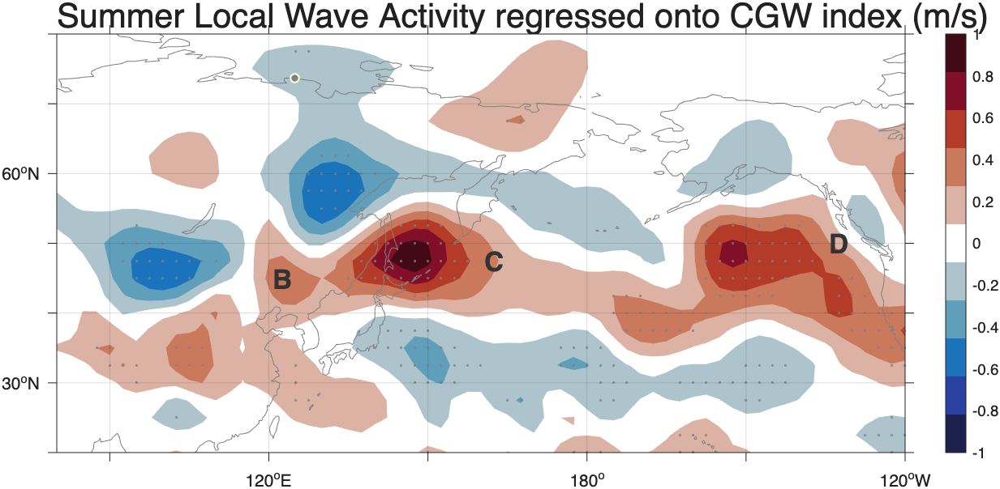
图 S2. 环球波动（CGW）型的纬向波数谱。
Figure S2. Zonal wave number spectrum of the Circumglobal Wave (CGW) pattern.
该纬向波数谱由经向风（30°N– 60°N）距平对晚夏 NWP 指数回归得到，并已去除 ENSO 信号（见方法）。
The zonal wave number spectrum is derived from meridional wind (30°N– 60°N) anomalies regressed onto the late summer NWP index, with ENSO signals removed (see Methods).
蓝线表示 30°N– 60°N 纬带平均谱，浅蓝色阴影表示 95% 置信区间。
The blue line shows the spectrum averaged across the 30°N– 60°N latitude band, with light blue shading indicating the 95% confidence interval.
灰线表示该纬带内各纬圈（间隔 2.5°）的谱，凸显与 CGW 型中观测到的五个高压中心相一致的主导 5 波结构。
Gray lines represent spectra at individual latitudes within this band (2.5° intervals), highlighting the dominant wavenumber-5 structure consistent with the five high- pressure centers observed in the CGW pattern.
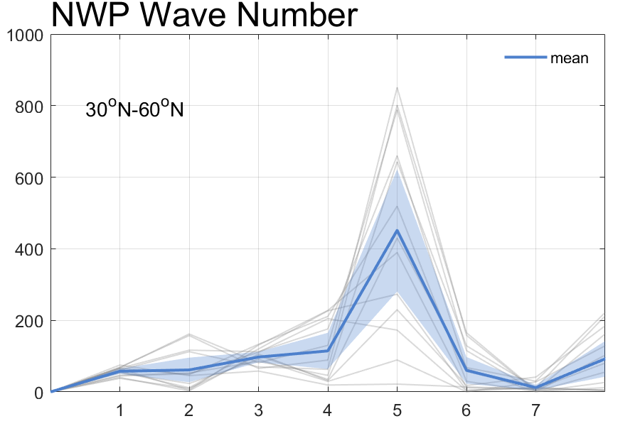
图 S3. 由 CGW 指数揭示的环球波动型。
Figure S3. The Circumglobal Wave pattern revealed by the CGW index.
夏季（JJA）Z200* 距平（已去除 ENSO 影响的 Z200；见方法）对夏季 CGW 指数的回归，凸显标为 A–E 的五个高压中心（黄框）。
Summer (JJA) Z200* anomalies (Z200 with ENSO influences removed; see Methods) regressed of onto the summer CGW index, highlighting five High centers labeled A–E (yellow boxes).
西北太平洋（NWP）区域以品红框标出。
The Northwestern Pacific (NWP) region is outlined in a magenta box.
灰色圆点表示在 95% 置信水平上统计显著的区域。
Gray dots indicate areas statistically significant at the 95% confidence level.
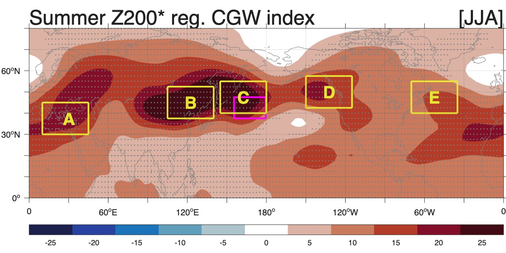
图 S4. 环球波动型的地面表现。
Figure S4. Surface expression of the Circumglobal Wave pattern.
A 观测中夏季（JJA）海平面气压距平（SLP*，hPa，填色）与地面风距平（UVsfc，矢量，m/s）对夏季 CGW 指数的回归。
A Summer (JJA) sea-level pressure anomalies (SLP*, hPa, shading) and surface wind anomalies (UVsfc, vectors, m/s) regressed onto the summer CGW index from observations.
B 强迫大气环流模式（AGCM）试验之 NWP 试验中的夏季地面风响应（矢量，m/s）与海平面气压距平（填色，hPa）。
B Summer surface wind response (vectors, m/s) and SLP anomalies (shading, hPa) in the NWP Run of forced AGCM experiment.
品红框表示西北太平洋区域，强迫中心在 B 面板中以 'x' 标出。
The magenta boxes indicate the NWP region, and the forcing center is marked by 'x' in panel B.
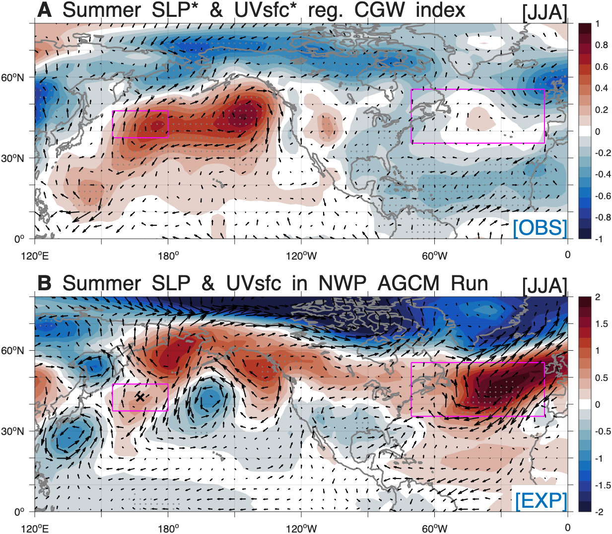
图 S5. 北太平洋与环球波动型相伴随的夏季海洋混合层热收支。
Figure S5. Summer ocean mixed-layer heat budget with the Circumglobal Wave pattern in North Pacific.
A 夏季海洋混合层温度倾向（dTm）对 CGW 指数的回归。
A Regression of summer ocean mixed-layer temperature tendency (dTm) onto the CGW index.
B 海表热通量（SHF）对 CGW 指数的回归。
B Regression of surface heat flux (SHF) onto the CGW index.
C 纬向混合层温度（Tm）输送对 CGW 指数的回归。
C Regression of zonal Tm transport onto the CGW index.
D 经向混合层温度（Tm）输送对 CGW 指数的回归。
D Regression of meridional Tm transport onto the CGW index.
E 残差项对 CGW 指数的回归。
E Regression of residuals onto the CGW index.
灰色圆点表示 95% 置信水平的统计显著性。
Statistical significance at the 95% confidence level is indicated by gray dots.
西北太平洋区域以品红框标出。
The NWP region is marked by magenta boxes.
所有面板均显示温度倾向项，单位为 °C/月。
All panels show temperature tendency terms in units of °C/month.
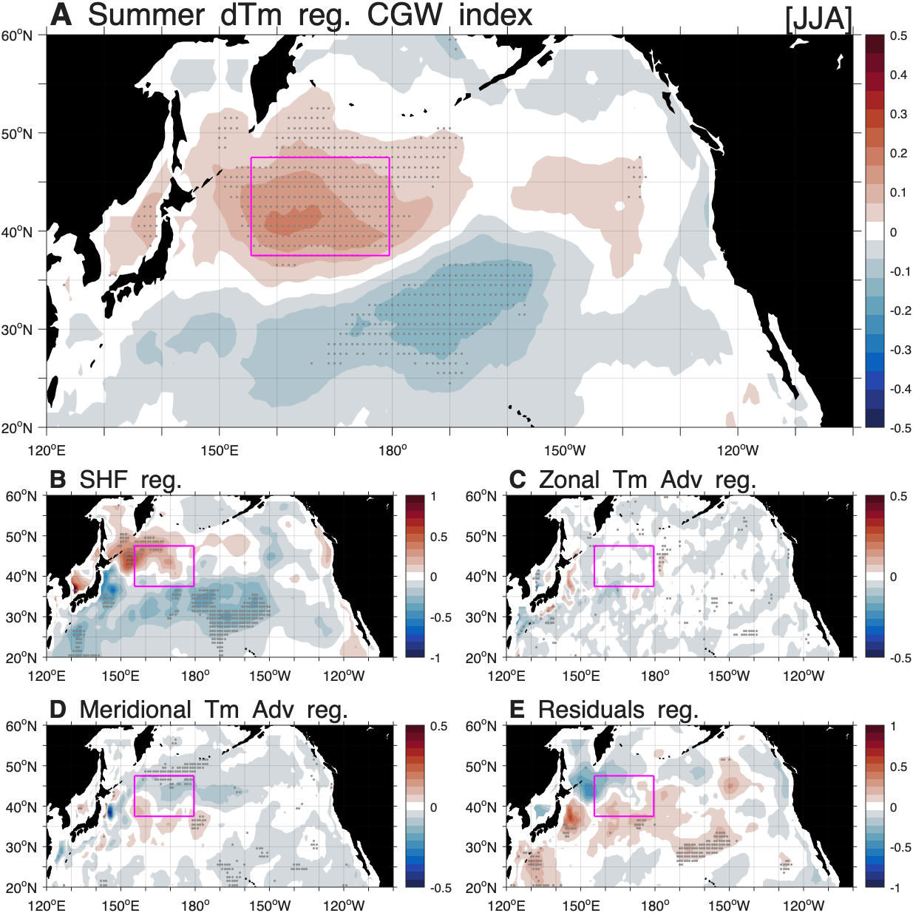
图 S6. 大气环流模式西北太平洋模拟的波数谱验证。
Figure S6. Wavenumber spectrum validation for AGCM NWP simulation.
同图 S2，但针对图 3C 和 D 所示波动型。观测 A 与大气环流模式模拟 B 均显示主导的 5 波结构（分别解释 49.3% 和 68.3% 的方差），位相分别为 −18.0° 和 −57.3°。
Same as Fig. S2 but for the wave patterns shown in Fig. 3C and D. Both observations A and AGCM simulation B show dominant wavenumber-5 structure (49.3% and 68.3% of variance, respectively), with phases of −18.0° and −57.3°.
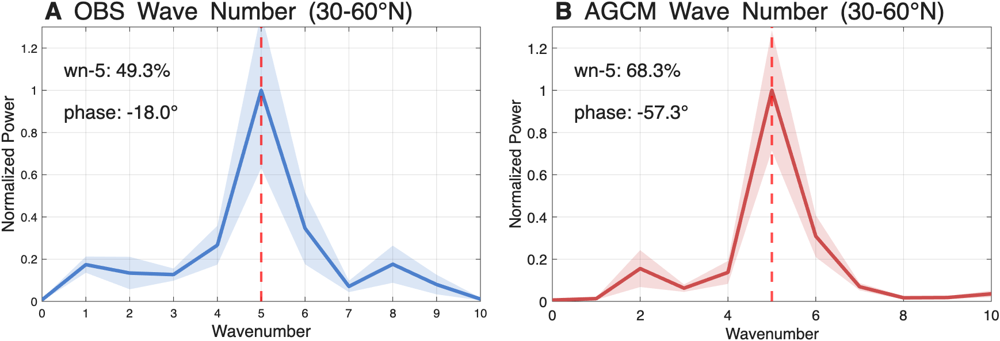
图 S7. 与冬季西北太平洋波列相关的正压能量转换。
Figure S7. Barotropic energy conversion associated with the winter NWP wave train.
冬季（DJF）正压能量转换（CK，已去除 ENSO 信号）对冬季 NWP 指数的回归。
Winter (DJF) barotropic energy conversion (CK, with ENSO signal removed) regressed onto the winter NWP index.
黄色字母 "C" 标出 CGW-C 中心，品红框表示西北太平洋区域。
The yellow letter "C" marks the CGW-C center, and the magenta box indicates the NWP region.
灰色圆点表示 95% 置信水平的统计显著性。
Gray dots denote statistical significance at the 95% confidence level.
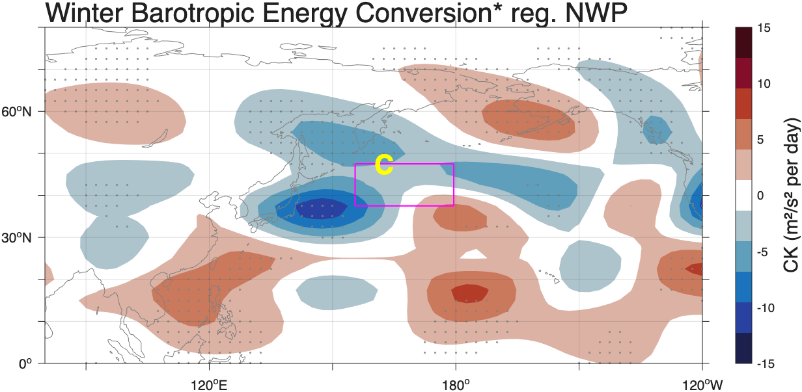
图 S8. 与西北太平洋海洋热浪相关的冬季大气型。
Figure S8. The winter atmospheric patterns associated with Northwestern Pacific marine heatwaves.
A 冬季（DJF）Z200*（已去除 ENSO 信号的 Z200 距平）对 CGW-C 指数的回归。
A Winter (DJF) Z200* (Z200 anomalies with ENSO signal removed) regression onto the CGW-C index.
B 强迫大气环流模式试验之 NWP 试验中的冬季 Z200 距平响应。
B Winter Z200 anomalies response in the NWP Run of forced AGCM experiment.
大气环流模式试验中规定的海表温度距平强迫中心以 'x' 标出。
The prescribed SSTA forcing center in the AGCM experiment is marked by 'x'.
CGW-C 区域以标有 "C" 的黄框标出，品红框表示西北太平洋区域。
The CGW-C region is marked by the yellow box labeled "C", and the magenta box indicates the NWP region.
灰色圆点表示 95% 置信水平的统计显著性。
Statistical significance at the 95% confidence level is indicated by gray dots.
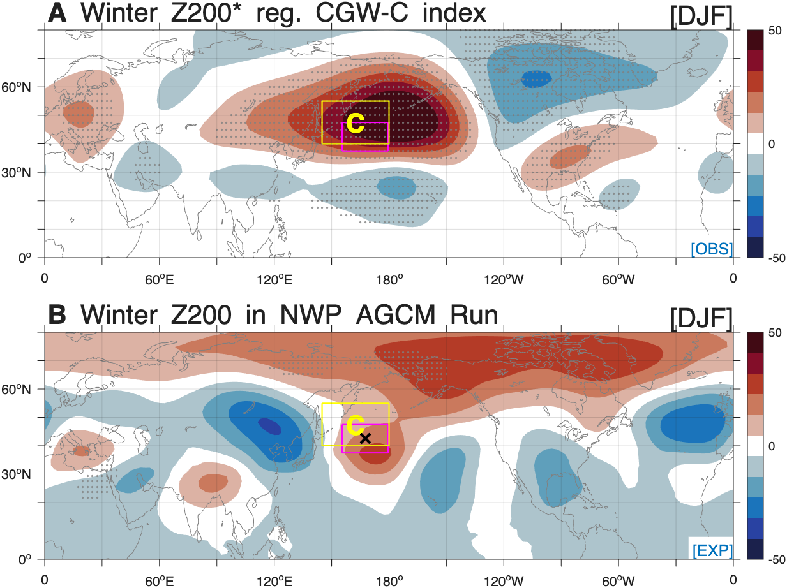
图 S9. 北太平洋与环球波动型相伴随的冬季海洋混合层热收支。
Figure S9. Winter ocean mixed layer heat budget with the Circumglobal Wave pattern in North Pacific.
同图 S5，但为冬季（DJF）对 CGW-C 指数（见方法）而非完整 CGW 指数的回归。
Same as Fig. S5 but for regressions against the CGW-C index (see Methods) instead of the full CGW index in winter (DJF).
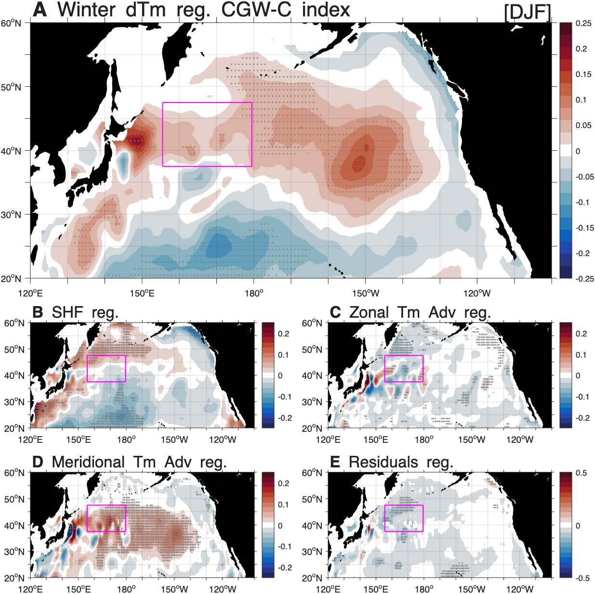
图 S10. 北大西洋区域夏季海洋混合层热收支。
Figure S10. Summer ocean mixed-layer heat budget in the North Atlantic region.
同图 S5，但为北大西洋扇区对夏季 CGW 指数的回归。
Same as Fig. S5 but for regressions onto the summer CGW index in the North Atlantic sector.
品红框表示北大西洋北部（NNA）区域。
The magenta box indicates the NNA region.
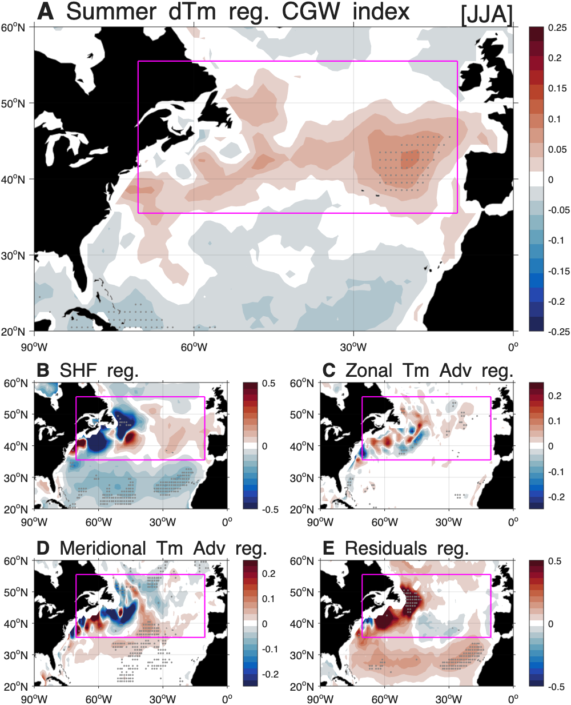
图 S11. 西北太平洋与北大西洋北部区域海表温度持续性的差异。
Figure S11. Differential SST persistence between NWP and NNA regions.
A 西北太平洋与 B 北大西洋北部区域月海表温度指数的滞后自相关。
Lag autocorrelation of monthly SST indices for A NWP and B NNA regions.
实线为观测自相关函数，阴影为 95% 置信区间。
Solid lines show observed autocorrelation functions with 95% confidence intervals (shading).
虚线为 AR(1) 模式拟合，滞后 1 自相关 α = 0.773（西北太平洋）和 α = 0.857（北大西洋北部）。
Dashed lines show AR(1) model fits with lag-1 autocorrelation α = 0.773 (NWP) and α = 0.857 (NNA).
水平点划线表示 1/e 阈值，垂直虚线标出 e 折时间：西北太平洋为 3.9 个月，北大西洋北部为 6.5 个月。
Horizontal dash-dot lines indicate 1/e threshold, with vertical dashed lines marking e-folding times of 3.9 months (NWP) and 6.5 months (NNA).
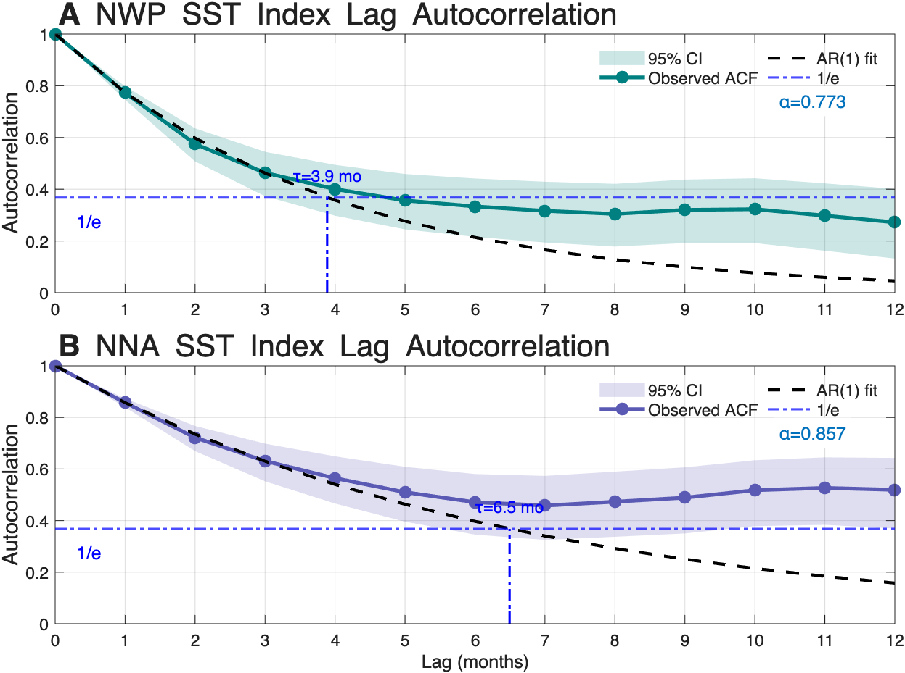
图 S12. 由夏季 CGW 型驱动的北大西洋增暖的季节持续性。
Figure S12. Seasonal persistence of North Atlantic warming, driven by the summer CGW pattern.
SST*（已去除 ENSO 信号的海表温度距平）与夏季 CGW 指数在各季节的滞后相关：JAS(+1)、SON(+3) 和 DJF(+6)。
SST* (SST anomalies with ENSO signal removed) lag correlation with the summer CGW index across seasons: JAS(+1), SON(+3), and DJF(+6).
品红框表示北大西洋北部区域。
The magenta boxes denote the NNA region.
灰色圆点表示 95% 置信水平的统计显著性。
Gray dots indicate statistical significance at the 95% confidence level.
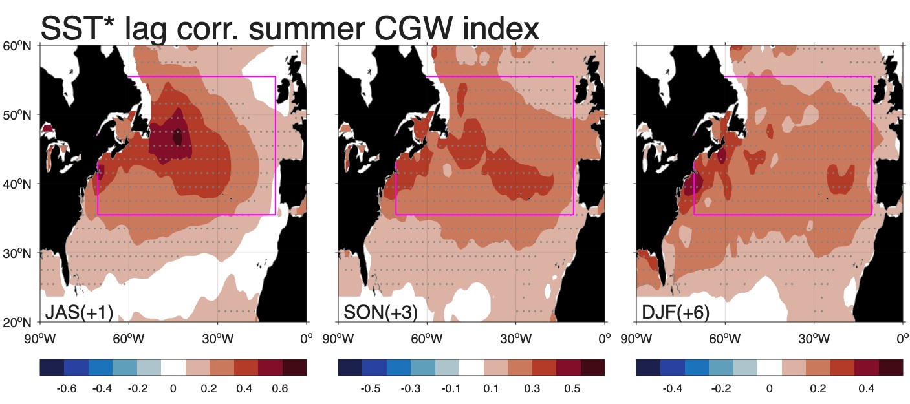
图 S13. 大气环流模式试验中北大西洋增暖的夏季大气响应。
Figure S13. Summer atmospheric response to North Atlantic warming in AGCM experiment.
北大西洋北部大气环流模式试验相对于控制试验的夏季（JJA）Z200 距平（m）。
Summer (JJA) Z200 anomalies (m) in the NNA AGCM experiment relative to the control run.
品红框表示西北太平洋与北大西洋北部区域。
The magenta boxes indicate the NWP and NNA regions.
黑叉标出北大西洋北部海表温度强迫中心。
The black cross marks the NNA SST forcing center.
打点表示 95% 置信水平的统计显著性。
Stippling indicates statistical significance at the 95% confidence level.
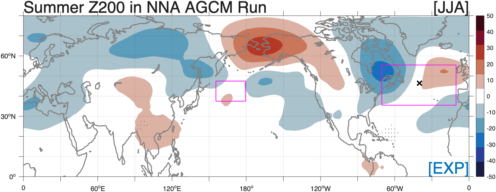
图 S14. CMIP6 多模式平均与二十世纪再分析中作为西北太平洋海表温度距平驱动因子的 CGW 型。
Figure S14. CGW patterns as the driver of NWP SSTA in CMIP6 multi-model mean and 20th Century Reanalysis.
A CMIP6 多模式平均（CMIP6-MMM）与 B 二十世纪再分析第 3 版（20thC-Reav3），显示夏季（JJA）Z200*（已去除 ENSO 信号的 Z200 距平）对 NWP 指数的回归。
A CMIP6 multi-model mean (CMIP6-MMM) and B 20th Century Reanalysis V3 (20thC-Reav3) showing summer (JJA) Z200* (Z200 anomalies with ENSO signal removed) regression onto the NWP index.
由图 1C 识别的 CGW 中心（A–E）以黄色标签标出。
The CGW centers (A–E), identified from Fig. 1C, are indicated by yellow labels.
灰色圆点表示 95% 置信水平的统计显著性。
Statistical significance at the 95% confidence level is indicated by gray dots.
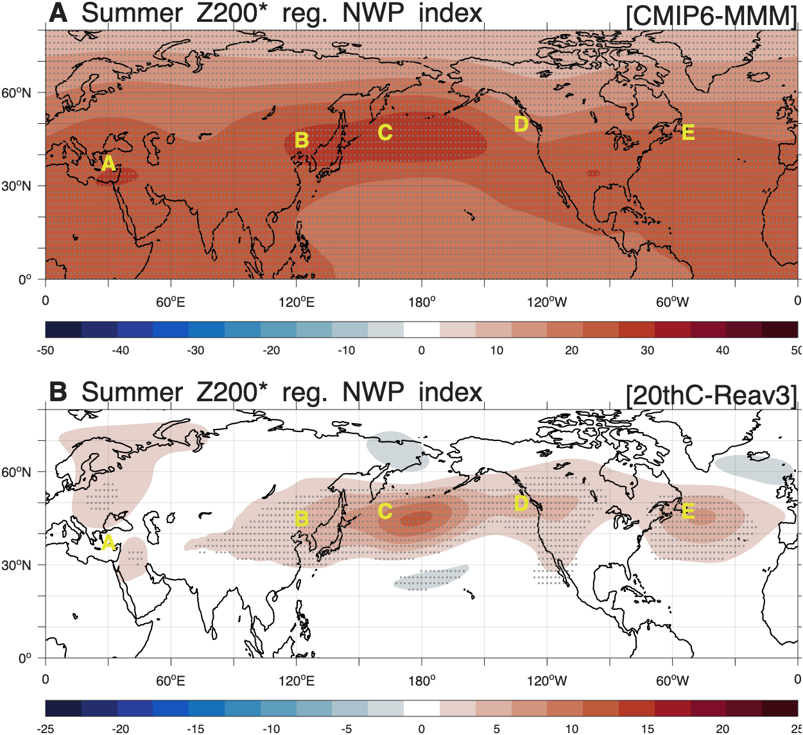
图 S15. 增强的 CGW–海洋热浪关系对不同去趋势方法的稳健性。采用 A 二次去趋势与 B 集合经验模态分解（EEMD）去趋势后，去趋势指数之间的 30 年滑动相关。
Figure S15. Robustness of strengthening CGW–MHW relationships to different detrending methods. 30-year running correlations between detrended indices using A quadratic detrending and B Ensemble Empirical Mode Decomposition (EEMD) detrending.
上行：夏季 CGW–西北太平洋相关；中行：夏季 CGW–北大西洋北部相关；下行：冬季西北太平洋–北大西洋北部相关。
Top row: summer CGW–NWP correlation; middle row: summer CGW– NNA correlation; bottom row: winter NWP–NNA correlation.
绿线为 CMIP6 多模式平均（CMIP6-MMM），阴影表示 95% 置信区间；紫线为二十世纪再分析第 3 版（20thC-Reav3）；粉线为 NCEP/NCAR 再分析 1（NCEP-R1）。
Green lines show CMIP6 multi-model mean (CMIP6-MMM) with shading indicating 95% confidence interval, purple lines show 20th Century Reanalysis V3 (20thC-Reav3), and pink lines show NCEP/NCAR Reanalysis 1 (NCEP-R1).
浅绿色线表示各个 CMIP6 模式。
Light green lines represent individual CMIP6 models.
各面板标出 1970–2014 年的趋势值（每世纪）与 p 值。
Trend values (per century) and p-values for 1970–2014 are labeled in each panel.
红色虚线表示 95% 置信水平的临界相关系数。
Red dashed lines indicate the critical correlation coefficient at 95% confidence level.
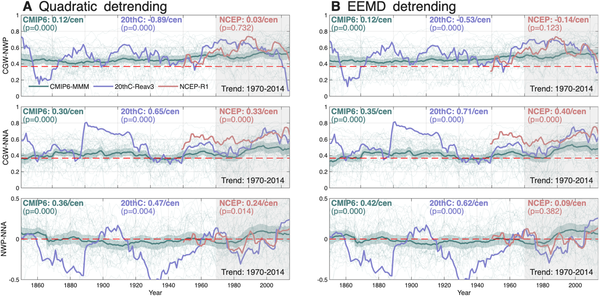
图 S16. 由 ENSO 强迫驱动的夏季大气型。
Figure S16. The summer atmospheric pattern driven by ENSO forcing.
夏季（JJA）Z200 对冷舌指数（CTI；乘以 −1 以便比较）的回归。
Summer (JJA) Z200 regression against the CTI (cold tongue index; multiplied by −1 for comparison).
由图 1C 识别的 CGW 中心（A–E）以黄色标签标出。
The CGW centers (A–E), identified from Fig. 1C, are indicated by yellow labels.
品红框表示西北太平洋区域。
The magenta box indicates the NWP region.
灰色圆点表示 95% 置信水平的统计显著性。
Statistical significance at the 95% confidence level is indicated by gray dots.
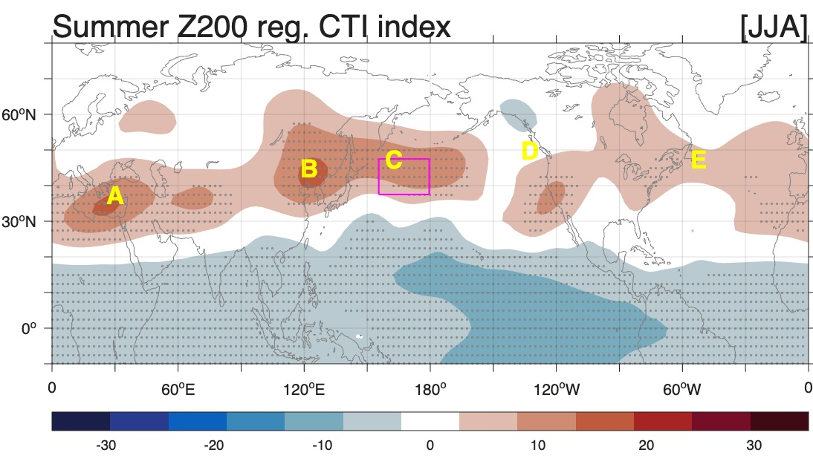
图 S17. 冷舌指数（CTI）大气型的纬向波数谱。
Figure S17. Zonal wave number spectrum of the Cold Tongue Index (CTI) atmospheric pattern.
该纬向波数谱由经向风（30°N–60°N）距平对夏季冷舌指数回归得到。
The zonal wave number spectrum is derived from meridional wind (30°N–60°N) anomalies regressed onto the summer CTI index.
蓝线表示 30°N–60°N 纬带平均谱，浅蓝色阴影表示 95% 置信区间。
The blue line shows the spectrum averaged across the 30°N–60°N latitude band, with light blue shading indicating the 95% confidence interval.
灰线表示该纬带内各纬圈（间隔 2.5°）的谱。
Gray lines represent spectra at individual latitudes within this band (2.5° intervals).
与 CGW 型（图 S3）不同，与冷舌指数相关的大气响应呈现更宽的谱分布，5 波主导性较弱。
Unlike the CGW pattern (Fig. S3), the CTI-associated atmospheric response shows a broader spectral distribution with less pronounced wavenumber-5 dominance.
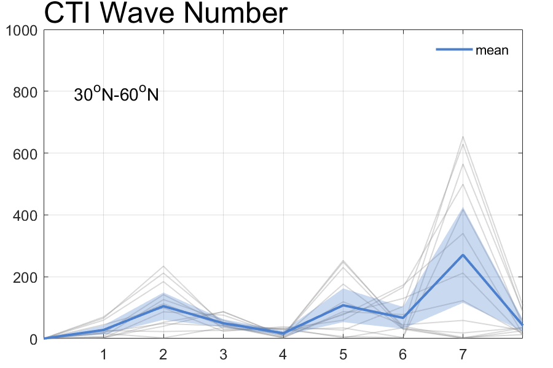
图 S18. 大气环流模式试验所用的海表温度距平强迫。
Figure S18. SST anomaly forcing used in the AGCM experiments.
A 西北太平洋大气环流模式试验（NWP AGCM Run）所规定的海表温度距平强迫：增暖异常的强迫中心（以 'x' 标出）位于 42.5°N、167.5°E，东西向 e 折半径约 15°，南北向 e 折半径约 10°。
A The prescribed SSTA forcing for the NWP AGCM Run experiments, with a warming anomaly with forcing center (marked by 'x') at 42.5°N, 167.5°E, having east–west e-folding radius of ~15° and north–south e-folding radius of ~10°.
品红框表示西北太平洋区域。
The magenta box indicates the NWP region.
B 北大西洋北部大气环流模式试验（NNA AGCM Run）所规定的海表温度距平强迫：增暖异常中心位于 45°N、40°W（以 'x' 标出），东西向 e 折半径约 15°，南北向 e 折半径约 15°。
B The prescribed SSTA forcing for the NNA AGCM Run experiments, with a warming anomaly centered at 45°N, 40°W (marked by 'x'), having east–west e-folding radius of ~15° and north–south e-folding radius of ~15°.
品红框表示北大西洋北部区域。
The magenta box indicates the NNA region.
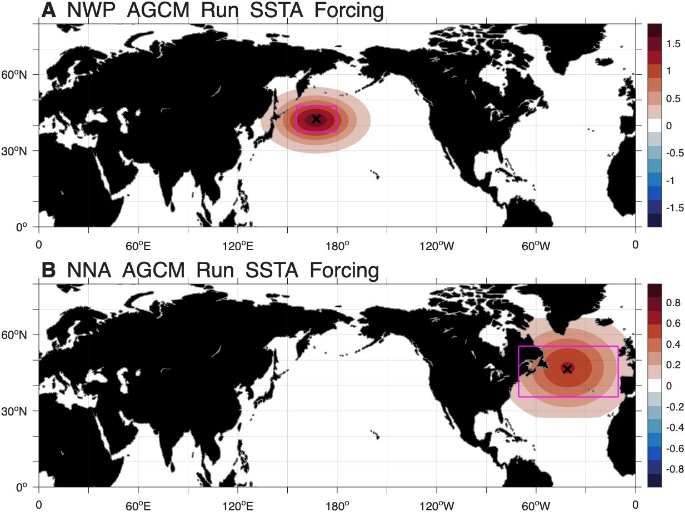
表 S1. 本研究所用的 CMIP6 模式。
Table S1. CMIP6 Models Used in This Study.
本研究所分析历史模拟的耦合模式比较计划第六阶段（CMIP6）模式及其配置一览。
List of Coupled Model Intercomparison Project Phase 6 (CMIP6) models whose historical simulations were analyzed in this study, along with their configurations.
全部模式输出均重映射至 1° × 1° 空间分辨率，历史时段为 1850–2014 年，所用集合成员为 r1i1p1f1。
All model outputs were remapped to 1° × 1° spatial resolution for the historical period 1850–2014, using ensemble member r1i1p1f1.
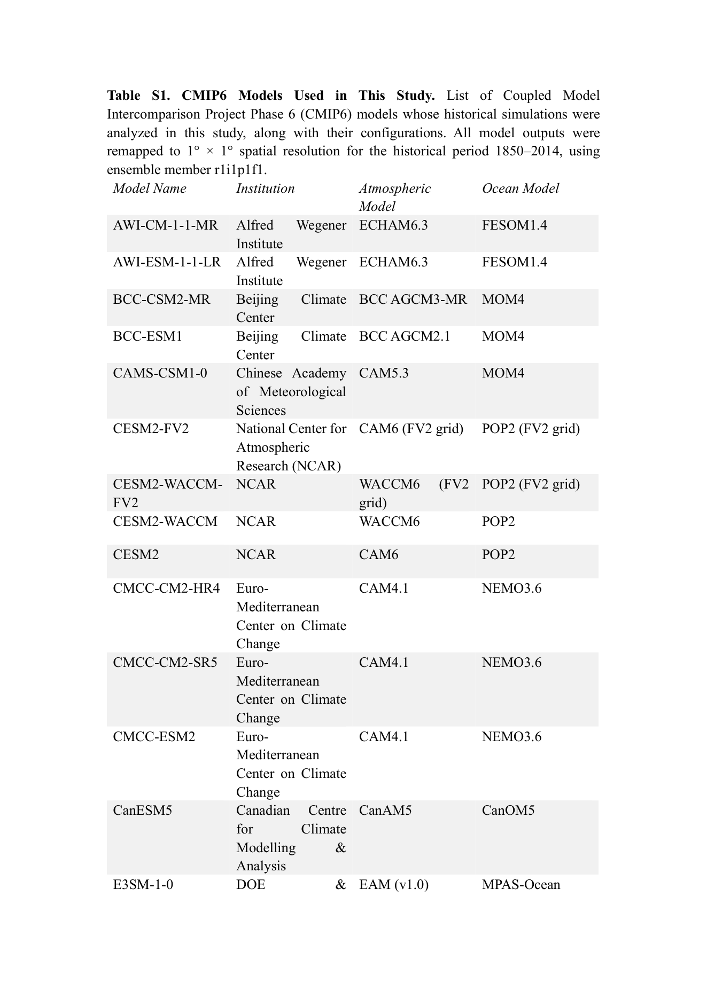
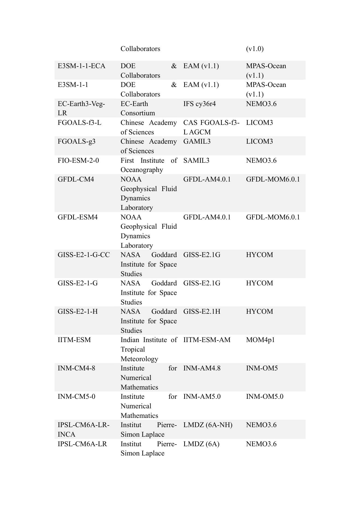
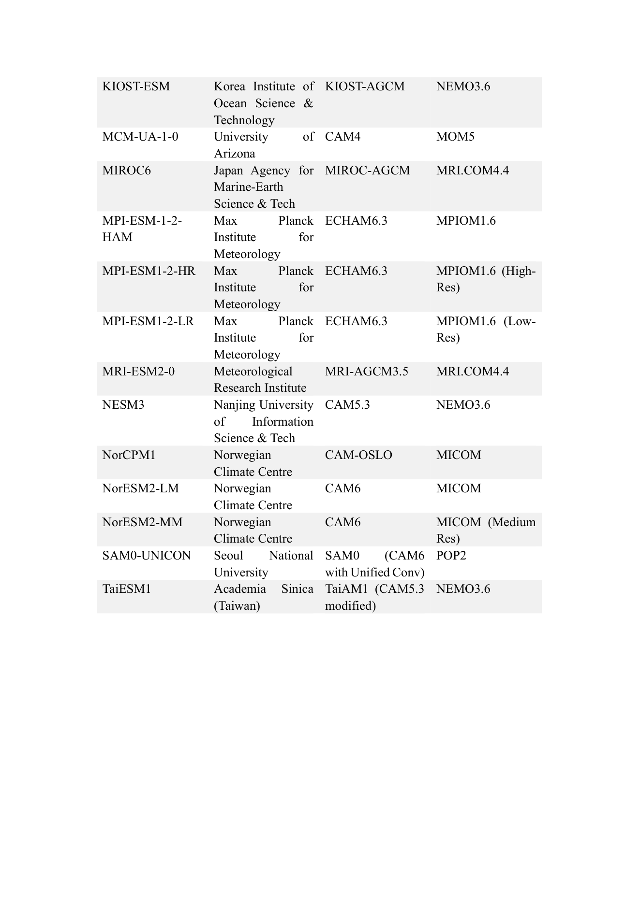
模式名称 机构 大气模式 海洋模式 AWI-CM-1-1-MR 阿尔弗雷德·韦格纳研究所 ECHAM6.3 FESOM1.4 AWI-ESM-1-1-LR 阿尔弗雷德·韦格纳研究所 ECHAM6.3 FESOM1.4 BCC-CSM2-MR 北京气候中心 BCC AGCM3-MR MOM4 BCC-ESM1 北京气候中心 BCC AGCM2.1 MOM4 CAMS-CSM1-0 中国气象科学研究院 CAM5.3 MOM4 CESM2-FV2 美国国家大气研究中心（NCAR） CAM6（FV2 网格） POP2（FV2 网格） CESM2-WACCM- FV2 NCAR WACCM6（FV2 网格） POP2（FV2 网格） CESM2-WACCM NCAR WACCM6 POP2 CESM2 NCAR CAM6 POP2 CMCC-CM2-HR4 欧洲地中海气候变化中心 CAM4.1 NEMO3.6 CMCC-CM2-SR5 欧洲地中海气候变化中心 CAM4.1 NEMO3.6 CMCC-ESM2 欧洲地中海气候变化中心 CAM4.1 NEMO3.6 CanESM5 加拿大气候模拟与分析中心 CanAM5 CanOM5 E3SM-1-0 美国能源部及 EAM（v1.0） MPAS-Ocean
Model Name Institution Atmospheric Model Ocean Model AWI-CM-1-1-MR Alfred Wegener Institute ECHAM6.3 FESOM1.4 AWI-ESM-1-1-LR Alfred Wegener Institute ECHAM6.3 FESOM1.4 BCC-CSM2-MR Beijing Climate Center BCC AGCM3-MR MOM4 BCC-ESM1 Beijing Climate Center BCC AGCM2.1 MOM4 CAMS-CSM1-0 Chinese Academy of Meteorological Sciences CAM5.3 MOM4 CESM2-FV2 National Center for Atmospheric Research (NCAR) CAM6 (FV2 grid) POP2 (FV2 grid) CESM2-WACCM- FV2 NCAR WACCM6 (FV2 grid) POP2 (FV2 grid) CESM2-WACCM NCAR WACCM6 POP2 CESM2 NCAR CAM6 POP2 CMCC-CM2-HR4 Euro- Mediterranean Center on Climate Change CAM4.1 NEMO3.6 CMCC-CM2-SR5 Euro- Mediterranean Center on Climate Change CAM4.1 NEMO3.6 CMCC-ESM2 Euro- Mediterranean Center on Climate Change CAM4.1 NEMO3.6 CanESM5 Canadian Centre for Climate Modelling & Analysis CanAM5 CanOM5 E3SM-1-0 DOE & EAM (v1.0) MPAS-Ocean
合作者（v1.0） E3SM-1-1-ECA 美国能源部及合作者 EAM（v1.1） MPAS-Ocean（v1.1） E3SM-1-1 美国能源部及合作者 EAM（v1.1） MPAS-Ocean（v1.1） EC-Earth3-Veg- LR EC-Earth 联盟 IFS cy36r4 NEMO3.6 FGOALS-f3-L 中国科学院 CAS FGOALS-f3- L AGCM LICOM3 FGOALS-g3 中国科学院 GAMIL3 LICOM3 FIO-ESM-2-0 自然资源部第一海洋研究所 SAMIL3 NEMO3.6 GFDL-CM4 美国国家海洋和大气管理局地球流体动力学实验室 GFDL-AM4.0.1 GFDL-MOM6.0.1 GFDL-ESM4 美国国家海洋和大气管理局地球流体动力学实验室 GFDL-AM4.0.1 GFDL-MOM6.0.1 GISS-E2-1-G-CC 美国国家航空航天局戈达德空间研究所 GISS-E2.1G HYCOM GISS-E2-1-G 美国国家航空航天局戈达德空间研究所 GISS-E2.1G HYCOM GISS-E2-1-H 美国国家航空航天局戈达德空间研究所 GISS-E2.1H HYCOM IITM-ESM 印度热带气象研究所 IITM-ESM-AM MOM4p1 INM-CM4-8 计算数学研究所 INM-AM4.8 INM-OM5 INM-CM5-0 计算数学研究所 INM-AM5.0 INM-OM5.0 IPSL-CM6A-LR- INCA 皮埃尔–西蒙·拉普拉斯研究所 LMDZ（6A-NH） NEMO3.6 IPSL-CM6A-LR 皮埃尔–西蒙·拉普拉斯研究所 LMDZ（6A） NEMO3.6
Collaborators (v1.0) E3SM-1-1-ECA DOE & Collaborators EAM (v1.1) MPAS-Ocean (v1.1) E3SM-1-1 DOE & Collaborators EAM (v1.1) MPAS-Ocean (v1.1) EC-Earth3-Veg- LR EC-Earth Consortium IFS cy36r4 NEMO3.6 FGOALS-f3-L Chinese Academy of Sciences CAS FGOALS-f3- L AGCM LICOM3 FGOALS-g3 Chinese Academy of Sciences GAMIL3 LICOM3 FIO-ESM-2-0 First Institute of Oceanography SAMIL3 NEMO3.6 GFDL-CM4 NOAA Geophysical Fluid Dynamics Laboratory GFDL-AM4.0.1 GFDL-MOM6.0.1 GFDL-ESM4 NOAA Geophysical Fluid Dynamics Laboratory GFDL-AM4.0.1 GFDL-MOM6.0.1 GISS-E2-1-G-CC NASA Goddard Institute for Space Studies GISS-E2.1G HYCOM GISS-E2-1-G NASA Goddard Institute for Space Studies GISS-E2.1G HYCOM GISS-E2-1-H NASA Goddard Institute for Space Studies GISS-E2.1H HYCOM IITM-ESM Indian Institute of Tropical Meteorology IITM-ESM-AM MOM4p1 INM-CM4-8 Institute for Numerical Mathematics INM-AM4.8 INM-OM5 INM-CM5-0 Institute for Numerical Mathematics INM-AM5.0 INM-OM5.0 IPSL-CM6A-LR- INCA Institut Pierre- Simon Laplace LMDZ (6A-NH) NEMO3.6 IPSL-CM6A-LR Institut Pierre- Simon Laplace LMDZ (6A) NEMO3.6
KIOST-ESM 韩国海洋科学技术院 KIOST-AGCM NEMO3.6 MCM-UA-1-0 亚利桑那大学 CAM4 MOM5 MIROC6 日本海洋研究开发机构 MIROC-AGCM MRI.COM4.4 MPI-ESM-1-2- HAM 马克斯·普朗克气象研究所 ECHAM6.3 MPIOM1.6 MPI-ESM1-2-HR 马克斯·普朗克气象研究所 ECHAM6.3 MPIOM1.6（高分辨率） MPI-ESM1-2-LR 马克斯·普朗克气象研究所 ECHAM6.3 MPIOM1.6（低分辨率） MRI-ESM2-0 气象研究所 MRI-AGCM3.5 MRI.COM4.4 NESM3 南京信息工程大学 CAM5.3 NEMO3.6 NorCPM1 挪威气候中心 CAM-OSLO MICOM NorESM2-LM 挪威气候中心 CAM6 MICOM NorESM2-MM 挪威气候中心 CAM6 MICOM（中等分辨率） SAM0-UNICON 首尔大学 SAM0（含统一对流的 CAM6） POP2 TaiESM1 中央研究院（台湾） TaiAM1（经修改的 CAM5.3） NEMO3.6
KIOST-ESM Korea Institute of Ocean Science & Technology KIOST-AGCM NEMO3.6 MCM-UA-1-0 University of Arizona CAM4 MOM5 MIROC6 Japan Agency for Marine-Earth Science & Tech MIROC-AGCM MRI.COM4.4 MPI-ESM-1-2- HAM Max Planck Institute for Meteorology ECHAM6.3 MPIOM1.6 MPI-ESM1-2-HR Max Planck Institute for Meteorology ECHAM6.3 MPIOM1.6 (High- Res) MPI-ESM1-2-LR Max Planck Institute for Meteorology ECHAM6.3 MPIOM1.6 (Low- Res) MRI-ESM2-0 Meteorological Research Institute MRI-AGCM3.5 MRI.COM4.4 NESM3 Nanjing University of Information Science & Tech CAM5.3 NEMO3.6 NorCPM1 Norwegian Climate Centre CAM-OSLO MICOM NorESM2-LM Norwegian Climate Centre CAM6 MICOM NorESM2-MM Norwegian Climate Centre CAM6 MICOM (Medium Res) SAM0-UNICON Seoul National University SAM0 (CAM6 with Unified Conv) POP2 TaiESM1 Academia Sinica (Taiwan) TaiAM1 (CAM5.3 modified) NEMO3.6
表 S2. 相关趋势对去趋势方法的敏感性。
Table S2. Sensitivity of correlation trends to detrending methods.
不同指数对、数据集与去趋势方法下 1970–2014 年 30 年滑动相关的趋势（每世纪）。
Trends in 30-year running correlations from 1970–2014 (per century) for different index pairs, datasets, and detrending methods.
星号表示统计显著性：*** p < 0.001，** p < 0.01，* p < 0.05。
Asterisks indicate statistical significance: *** p < 0.001, ** p < 0.01, * p < 0.05.
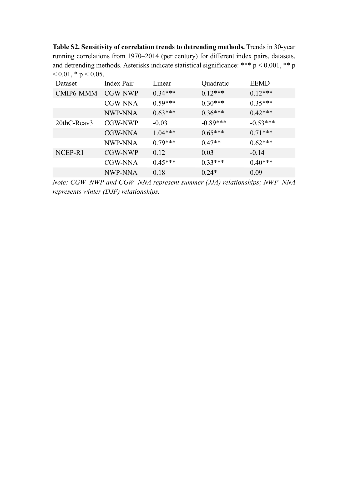
数据集 指数对 线性 二次 EEMD CMIP6-MMM CGW-NWP 0.34*** 0.12*** 0.12*** CGW-NNA 0.59*** 0.30*** 0.35*** NWP-NNA 0.63*** 0.36*** 0.42*** 20thC-Reav3 CGW-NWP -0.03 -0.89*** -0.53*** CGW-NNA 1.04*** 0.65*** 0.71*** NWP-NNA 0.79*** 0.47** 0.62*** NCEP-R1 CGW-NWP 0.12 0.03 -0.14 CGW-NNA 0.45*** 0.33*** 0.40*** NWP-NNA 0.18 0.24* 0.09 注：CGW–西北太平洋与 CGW–北大西洋北部表示夏季（JJA）关系；西北太平洋–北大西洋北部表示冬季（DJF）关系。
Dataset Index Pair Linear Quadratic EEMD CMIP6-MMM CGW-NWP 0.34*** 0.12*** 0.12*** CGW-NNA 0.59*** 0.30*** 0.35*** NWP-NNA 0.63*** 0.36*** 0.42*** 20thC-Reav3 CGW-NWP -0.03 -0.89*** -0.53*** CGW-NNA 1.04*** 0.65*** 0.71*** NWP-NNA 0.79*** 0.47** 0.62*** NCEP-R1 CGW-NWP 0.12 0.03 -0.14 CGW-NNA 0.45*** 0.33*** 0.40*** NWP-NNA 0.18 0.24* 0.09 Note: CGW–NWP and CGW–NNA represent summer (JJA) relationships; NWP–NNA represents winter (DJF) relationships.